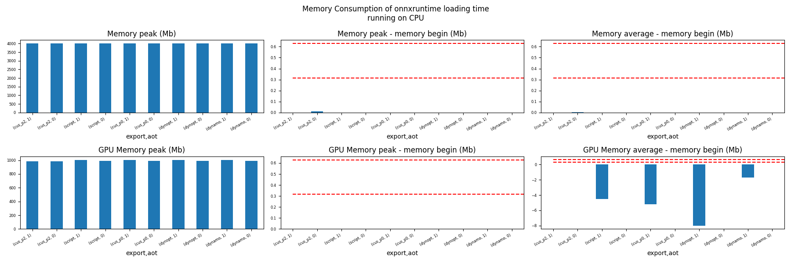
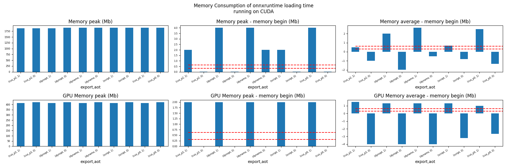
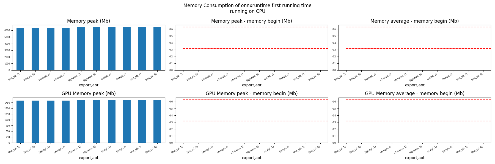
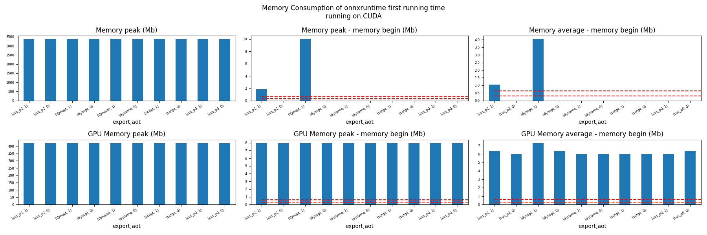
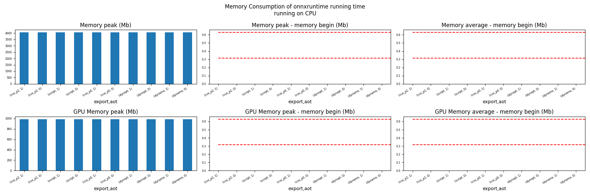
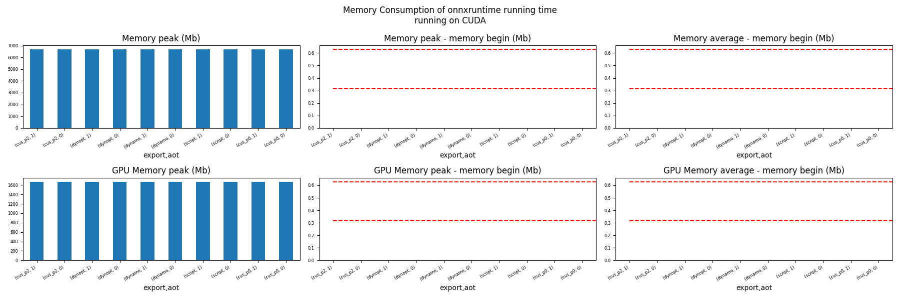

Note
Go to the end to download the full example code.
201: Evaluate different ways to export a torch model to ONNX¶
The example evaluates the performance of onnxruntime of a simple torch model after it was converted into ONNX through different processes:
TorchScript-based ONNX Exporter, let’s call it script
TorchDynamo-based ONNX Exporter, let’s call it dynamo
if available, the previous model but optimized, dynopt
a custom exporter cus_p0, this exporter supports a very limited set of models, as dynamo, it relies on torch.fx but the design is closer to what tensorflow-onnx does.
the same exporter but unused nodes were removed and constants were folded, cus_p2
To run the script:
python _doc/examples/plot_torch_export --help
The script takes around 12 minutes with a larger models.
Some helpers¶
from experimental_experiment.args import get_parsed_args
script_args = get_parsed_args(
"plot_torch_export",
description=__doc__,
scenarios={
"small": "small model to test",
"middle": "55Mb model",
"large": "1Gb model",
},
warmup=5,
repeat=5,
maxtime=(
2,
"maximum time to run a model to measure the computation time, "
"it is 0.1 when scenario is small",
),
expose="scenarios,repeat,warmup",
)
import contextlib
import itertools
import os
import platform
import pprint
import multiprocessing
import time
import cProfile
import pstats
import io
import warnings
import logging
from pstats import SortKey
try:
with warnings.catch_warnings():
warnings.simplefilter("ignore")
import onnxruntime
has_cuda = "CUDAExecutionProvider" in onnxruntime.get_available_providers()
except ImportError:
print("onnxruntime not available.")
import sys
sys.exit(0)
import numpy as np
import matplotlib.pyplot as plt
import pandas
import onnx
from onnx_array_api.profiling import profile2graph
import torch
from torch import nn
import torch.nn.functional as F
import experimental_experiment
from experimental_experiment.torch_interpreter import to_onnx
from experimental_experiment.xbuilder import OptimizationOptions
from experimental_experiment.plotting.memory import memory_peak_plot
from experimental_experiment.ext_test_case import measure_time, get_figure
from experimental_experiment.memory_peak import start_spying_on
from experimental_experiment.ext_test_case import unit_test_going
from experimental_experiment.helpers import pretty_onnx
from tqdm import tqdm
has_cuda = has_cuda and torch.cuda.is_available()
logging.disable(logging.ERROR)
def system_info():
obs = {}
obs["processor"] = platform.processor()
obs["cores"] = multiprocessing.cpu_count()
try:
obs["cuda"] = 1 if torch.cuda.is_available() else 0
obs["cuda_count"] = torch.cuda.device_count()
obs["cuda_name"] = torch.cuda.get_device_name()
obs["cuda_capa"] = torch.cuda.get_device_capability()
except (RuntimeError, AssertionError):
# no cuda
pass
return obs
pprint.pprint(system_info())
{'cores': 20,
'cuda': 1,
'cuda_capa': (8, 9),
'cuda_count': 1,
'cuda_name': 'NVIDIA GeForce RTX 4060 Laptop GPU',
'processor': 'x86_64'}
Scripts arguments
if script_args.scenario in (None, "small"):
script_args.maxtime = 0.1
if unit_test_going():
script_args.warmup = 1
script_args.repeat = 1
script_args.maxtime = 0.1
script_args.scenario = "small"
print(f"scenario={script_args.scenario or 'small'}")
print(f"warmup={script_args.warmup}")
print(f"repeat={script_args.repeat}")
print(f"maxtime={script_args.maxtime}")
scenario=small
warmup=5
repeat=5
maxtime=0.1
The model¶
A simple model to convert.
class MyModelClass(nn.Module):
def __init__(self, scenario=script_args.scenario):
super().__init__()
if scenario == "middle":
self.large = False
self.conv1 = nn.Conv2d(1, 128, 5)
self.conv2 = nn.Conv2d(128, 16, 5)
self.fc1 = nn.Linear(13456, 1024)
self.fcs = []
self.fc2 = nn.Linear(1024, 128)
self.fc3 = nn.Linear(128, 10)
elif scenario in (None, "small"):
self.large = False
self.conv1 = nn.Conv2d(1, 16, 5)
self.conv2 = nn.Conv2d(16, 16, 5)
self.fc1 = nn.Linear(16, 512)
self.fcs = []
self.fc2 = nn.Linear(512, 128)
self.fc3 = nn.Linear(128, 10)
elif scenario in (None, "large"):
self.large = True
self.conv1 = nn.Conv2d(1, 128, 5)
self.conv2 = nn.Conv2d(128, 16, 5)
self.fc1 = nn.Linear(13456, 4096)
# torch script does not support loops.
self.fca = nn.Linear(4096, 4096)
self.fcb = nn.Linear(4096, 4096)
self.fcc = nn.Linear(4096, 4096)
self.fcd = nn.Linear(4096, 4096)
self.fce = nn.Linear(4096, 4096)
self.fcf = nn.Linear(4096, 4096)
self.fcg = nn.Linear(4096, 4096)
self.fch = nn.Linear(4096, 4096)
self.fci = nn.Linear(4096, 4096)
self.fck = nn.Linear(4096, 4096)
self.fcl = nn.Linear(4096, 4096)
self.fcm = nn.Linear(4096, 4096)
self.fcn = nn.Linear(4096, 4096)
# end of the unfolded loop.
self.fc2 = nn.Linear(4096, 128)
self.fc3 = nn.Linear(128, 10)
else:
raise ValueError(f"Unsupported scenario={scenario!r}.")
def forward(self, x):
x = F.max_pool2d(F.relu(self.conv1(x)), (2, 2))
x = F.max_pool2d(F.relu(self.conv2(x)), 2)
x = torch.flatten(x, 1)
x = F.relu(self.fc1(x))
if self.large:
# loop
x = F.relu(self.fca(x))
x = F.relu(self.fcb(x))
x = F.relu(self.fcc(x))
x = F.relu(self.fcd(x))
x = F.relu(self.fce(x))
x = F.relu(self.fcf(x))
x = F.relu(self.fcg(x))
x = F.relu(self.fch(x))
x = F.relu(self.fci(x))
x = F.relu(self.fck(x))
x = F.relu(self.fcl(x))
x = F.relu(self.fcm(x))
x = F.relu(self.fcn(x))
# end of the loop
x = F.relu(self.fc2(x))
x = self.fc3(x)
return x
def create_model_and_input(scenario=script_args.scenario):
if scenario == "middle":
shape = [1, 1, 128, 128]
elif scenario in (None, "small"):
shape = [1, 1, 16, 16]
elif scenario == "large":
shape = [1, 1, 128, 128]
else:
raise ValueError(f"Unsupported scenario={scenario!r}.")
input_tensor = torch.rand(*shape).to(torch.float32)
model = MyModelClass(scenario=scenario)
assert model(input_tensor) is not None
return model, input_tensor
def torch_model_size(model):
size_model = 0
for param in model.parameters():
size = param.numel() * torch.finfo(param.data.dtype).bits / 8
size_model += size
return size_model
model, input_tensor = create_model_and_input()
model_size = torch_model_size(model)
print(f"model size={model_size / 2 ** 20} Mb")
model size=0.31467437744140625 Mb
The exporters¶
def export_script(filename, model, *args):
with contextlib.redirect_stdout(io.StringIO()):
with warnings.catch_warnings():
warnings.simplefilter("ignore")
torch.onnx.export(model, *args, filename, input_names=["input"])
def export_dynamo(filename, model, *args):
with contextlib.redirect_stdout(io.StringIO()):
with warnings.catch_warnings():
warnings.simplefilter("ignore")
export_output = torch.onnx.export(model, args, dynamo=True)
export_output.save(filename)
def export_dynopt(filename, model, *args):
with contextlib.redirect_stdout(io.StringIO()):
with warnings.catch_warnings():
warnings.simplefilter("ignore")
export_output = torch.onnx.export(model, args, dynamo=True)
model_onnx = export_output.model_proto
from experimental_experiment.convert.convert_helper import (
optimize_model_proto_oxs,
)
optimized_model = optimize_model_proto_oxs(model_onnx)
with open(filename, "wb") as f:
f.write(optimized_model.SerializeToString())
def export_cus_p0(filename, model, *args):
onx = to_onnx(model, tuple(args), input_names=["input"])
with open(filename, "wb") as f:
f.write(onx.SerializeToString())
def export_cus_p2(filename, model, *args):
onx = to_onnx(
model,
tuple(args),
input_names=["input"],
options=OptimizationOptions(
remove_unused=True,
constant_folding=True,
),
)
with open(filename, "wb") as f:
f.write(onx.SerializeToString())
Let’s check they are working.
export_functions = [
export_script,
export_dynamo,
export_dynopt,
export_cus_p0,
export_cus_p2,
]
exporters = {f.__name__.replace("export_", ""): f for f in export_functions}
supported_exporters = {}
for k, v in exporters.items():
print(f"run exporter {k}")
filename = f"plot_torch_export_{k}.onnx"
try:
v(filename, model, input_tensor)
except Exception as e:
print(f"skipped due to {str(e)[:1000]}")
continue
supported_exporters[k] = v
print(f"done. size={os.stat(filename).st_size / 2 ** 20:1.0f} Mb")
run exporter script
done. size=0 Mb
run exporter dynamo
done. size=0 Mb
run exporter dynopt
done. size=0 Mb
run exporter cus_p0
done. size=0 Mb
run exporter cus_p2
done. size=0 Mb
Exporter memory¶
def flatten(ps):
obs = ps["cpu"].to_dict(unit=2**20)
if "gpus" in ps:
for i, g in enumerate(ps["gpus"]):
for k, v in g.to_dict(unit=2**20).items():
obs[f"gpu{i}_{k}"] = v
return obs
data = []
for k, v in supported_exporters.items():
print(f"run exporter for memory {k}")
filename = f"plot_torch_export_{k}.onnx"
if has_cuda:
torch.cuda.set_device(0)
stat = start_spying_on(cuda=1 if has_cuda else 0)
v(filename, model, input_tensor)
obs = flatten(stat.stop())
print("done.")
onx = onnx.load(filename)
obs.update(dict(nodes=len(onx.graph.node), export=k))
data.append(obs)
stat = start_spying_on(cuda=1 if has_cuda else 0)
exported_mod = torch.export.export(model, (input_tensor,))
obs = flatten(stat.stop())
obs.update(dict(export="torch.fx"))
data.append(obs)
run exporter for memory script
done.
run exporter for memory dynamo
done.
run exporter for memory dynopt
done.
run exporter for memory cus_p0
done.
run exporter for memory cus_p2
done.
The result.
df1 = pandas.DataFrame(data)
df1.to_csv("plot_torch_export_memory.csv", index=False)
df1.to_excel("plot_torch_export_memory.xlsx", index=False)
print(df1)
ax = memory_peak_plot(
data,
bars=[model_size * i / 2**20 for i in range(1, 5)],
suptitle=f"Memory Consumption of the Export\nmodel size={model_size / 2**20:1.0f} Mb",
)
get_figure(ax).savefig("plot_torch_export_memory.png")
peak mean n begin end gpu0_peak gpu0_mean gpu0_n gpu0_begin gpu0_end nodes export
0 6640.859375 6639.165737 7 6638.890625 6638.882812 1883.617188 1883.617188 7 1883.617188 1883.617188 12.0 script
1 6638.902344 6638.884301 63 6638.882812 6638.902344 1883.617188 1883.617188 63 1883.617188 1883.617188 17.0 dynamo
2 6639.085938 6638.925361 65 6638.902344 6639.085938 1883.617188 1883.617188 65 1883.617188 1883.617188 16.0 dynopt
3 6639.085938 6639.085938 16 6639.085938 6639.085938 1883.617188 1883.617188 16 1883.617188 1883.617188 15.0 cus_p0
4 6639.121094 6639.089614 17 6639.085938 6639.121094 1883.617188 1883.617188 17 1883.617188 1883.617188 12.0 cus_p2
5 6639.125000 6639.124268 16 6639.121094 6639.125000 1883.617188 1883.617188 16 1883.617188 1883.617188 NaN torch.fx
Exporter speed¶
data = []
for k, v in supported_exporters.items():
print(f"run exporter {k}")
filename = f"plot_torch_export_{k}.onnx"
times = []
for _ in range(script_args.repeat):
begin = time.perf_counter()
v(filename, model, input_tensor)
duration = time.perf_counter() - begin
times.append(duration)
onx = onnx.load(filename)
print("done.")
data.append(
dict(
export=k,
time=np.mean(times),
min=min(times),
max=max(times),
first=times[0],
last=times[-1],
std=np.std(times),
nodes=len(onx.graph.node),
)
)
run exporter script
done.
run exporter dynamo
done.
run exporter dynopt
done.
run exporter cus_p0
done.
run exporter cus_p2
done.
The last export to measure time torch spends in export the model before any other export can begin the translation except the first one.
times = []
for _ in range(script_args.repeat):
begin = time.perf_counter()
exported_mod = torch.export.export(model, (input_tensor,))
duration = time.perf_counter() - begin
times.append(duration)
data.append(
dict(
export="torch.fx",
time=np.mean(times),
min=min(times),
max=max(times),
first=times[0],
last=times[-1],
std=np.std(times),
nodes=len(onx.graph.node),
)
)
The result.
df1 = pandas.DataFrame(data)
df1.to_csv("plot_torch_export_time.csv", index=False)
df1.to_excel("plot_torch_export_time.xlsx", index=False)
print(df1)
fig, ax = plt.subplots(1, 1)
dfi = df1[["export", "time", "std"]].set_index("export")
dfi["time"].plot.bar(ax=ax, title="Export time", yerr=dfi["std"], rot=30)
fig.tight_layout()
fig.savefig("plot_torch_export_time.png")
export time min max first last std nodes
0 script 0.057790 0.022009 0.083090 0.046734 0.022009 0.021618 12
1 dynamo 0.622592 0.500059 1.026362 1.026362 0.500059 0.202249 17
2 dynopt 0.667174 0.516039 1.094419 1.094419 0.564189 0.215159 16
3 cus_p0 0.132590 0.098591 0.175469 0.148844 0.098591 0.028623 15
4 cus_p2 0.106459 0.091308 0.124505 0.091308 0.102134 0.010814 12
5 torch.fx 0.085308 0.072224 0.097029 0.072224 0.097029 0.009041 12
Exporter Profiling¶
def clean_text(text):
pathes = [
os.path.abspath(os.path.normpath(os.path.join(os.path.dirname(torch.__file__), ".."))),
os.path.abspath(os.path.normpath(os.path.join(os.path.dirname(onnx.__file__), ".."))),
os.path.abspath(
os.path.normpath(
os.path.join(os.path.dirname(experimental_experiment.__file__), "..")
)
),
]
for p in pathes:
text = text.replace(p, "")
text = text.replace("experimental_experiment", "experimental_experiment".upper())
return text
def profile_function(name, export_function, verbose=False):
print(f"profile {name}: {export_function}")
pr = cProfile.Profile()
pr.enable()
for _ in range(script_args.repeat):
export_function("dummyc.onnx", model, input_tensor)
pr.disable()
s = io.StringIO()
sortby = SortKey.CUMULATIVE
ps = pstats.Stats(pr, stream=s).sort_stats(sortby)
ps.print_stats()
raw = s.getvalue()
text = "\n".join(raw.split("\n")[:200])
if verbose:
print(text)
with open(f"plot_torch_export_profile_{name}.txt", "w") as f:
f.write(raw)
root, nodes = profile2graph(ps, clean_text=clean_text)
text = root.to_text()
with open(f"plot_torch_export_profile_{name}_h.txt", "w") as f:
f.write(text)
print("done.")
profile_function("custom0", export_cus_p0, True)
profile_function("custom2", export_cus_p2)
profile custom0: <function export_cus_p0 at 0x7fd0d04e71c0>
1046317 function calls (1018492 primitive calls) in 1.588 seconds
Ordered by: cumulative time
ncalls tottime percall cumtime percall filename:lineno(function)
5 0.001 0.000 1.609 0.322 /home/xadupre/github/experimental-experiment/_doc/examples/plot_torch_export_201.py:281(export_cus_p0)
5 0.001 0.000 1.601 0.320 /home/xadupre/github/experimental-experiment/experimental_experiment/torch_interpreter/onnx_export.py:707(to_onnx)
5 0.001 0.000 1.373 0.275 /home/xadupre/github/experimental-experiment/experimental_experiment/torch_interpreter/onnx_export.py:356(_make_builder_interpreter)
5 0.000 0.000 1.370 0.274 /home/xadupre/github/experimental-experiment/experimental_experiment/torch_interpreter/export_options.py:167(export)
5 0.000 0.000 1.370 0.274 /home/xadupre/vv/this/lib/python3.10/site-packages/torch/export/__init__.py:263(export)
10/5 0.000 0.000 1.369 0.274 /home/xadupre/vv/this/lib/python3.10/site-packages/torch/export/_trace.py:999(wrapper)
10/5 0.000 0.000 1.369 0.274 /home/xadupre/vv/this/lib/python3.10/site-packages/torch/export/exported_program.py:124(wrapper)
5 0.000 0.000 1.369 0.274 /home/xadupre/vv/this/lib/python3.10/site-packages/torch/export/_trace.py:1888(_export)
5 0.000 0.000 1.368 0.274 /home/xadupre/vv/this/lib/python3.10/site-packages/torch/export/_trace.py:1797(_export_for_training)
5 0.001 0.000 1.349 0.270 /home/xadupre/vv/this/lib/python3.10/site-packages/torch/export/_trace.py:1266(_strict_export_lower_to_aten_ir)
5 0.000 0.000 1.082 0.216 /home/xadupre/vv/this/lib/python3.10/site-packages/torch/export/_trace.py:624(_export_to_torch_ir)
5 0.000 0.000 1.080 0.216 /home/xadupre/vv/this/lib/python3.10/site-packages/torch/_dynamo/eval_frame.py:1433(inner)
95/30 0.000 0.000 1.070 0.036 /home/xadupre/vv/this/lib/python3.10/site-packages/torch/nn/modules/module.py:1735(_wrapped_call_impl)
95/30 0.001 0.000 1.070 0.036 /home/xadupre/vv/this/lib/python3.10/site-packages/torch/nn/modules/module.py:1743(_call_impl)
5 0.000 0.000 1.026 0.205 /home/xadupre/vv/this/lib/python3.10/site-packages/torch/_dynamo/eval_frame.py:539(_fn)
5 0.000 0.000 0.957 0.191 /home/xadupre/vv/this/lib/python3.10/site-packages/torch/_dynamo/convert_frame.py:1311(__call__)
5 0.001 0.000 0.956 0.191 /home/xadupre/vv/this/lib/python3.10/site-packages/torch/_dynamo/convert_frame.py:449(__call__)
5 0.001 0.000 0.954 0.191 /home/xadupre/vv/this/lib/python3.10/site-packages/torch/_dynamo/convert_frame.py:599(_compile)
5 0.000 0.000 0.924 0.185 /home/xadupre/vv/this/lib/python3.10/site-packages/torch/_dynamo/convert_frame.py:696(compile_inner)
5 0.000 0.000 0.921 0.184 /home/xadupre/vv/this/lib/python3.10/site-packages/torch/_utils_internal.py:89(wrapper_function)
5 0.000 0.000 0.921 0.184 /home/xadupre/vv/this/lib/python3.10/site-packages/torch/_dynamo/convert_frame.py:719(_compile_inner)
5 0.000 0.000 0.855 0.171 /home/xadupre/vv/this/lib/python3.10/site-packages/torch/_dynamo/bytecode_transformation.py:1353(transform_code_object)
5 0.001 0.000 0.846 0.169 /home/xadupre/vv/this/lib/python3.10/site-packages/torch/_dynamo/convert_frame.py:204(_fn)
5 0.000 0.000 0.842 0.168 /home/xadupre/vv/this/lib/python3.10/site-packages/torch/_dynamo/convert_frame.py:635(transform)
5 0.001 0.000 0.538 0.108 /home/xadupre/vv/this/lib/python3.10/site-packages/torch/_dynamo/symbolic_convert.py:2681(__init__)
55/5 0.001 0.000 0.525 0.105 /home/xadupre/vv/this/lib/python3.10/site-packages/torch/_dynamo/variables/lazy.py:104(realize_all)
1705 0.489 0.000 0.490 0.000 {built-in method builtins.issubclass}
5 0.000 0.000 0.303 0.061 /home/xadupre/vv/this/lib/python3.10/site-packages/torch/_dynamo/symbolic_convert.py:2863(run)
5 0.000 0.000 0.303 0.061 /home/xadupre/vv/this/lib/python3.10/site-packages/torch/_dynamo/symbolic_convert.py:1049(run)
280 0.002 0.000 0.302 0.001 /home/xadupre/vv/this/lib/python3.10/site-packages/torch/_dynamo/symbolic_convert.py:935(step)
1080/690 0.002 0.000 0.245 0.000 /home/xadupre/vv/this/lib/python3.10/site-packages/torch/utils/_stats.py:16(wrapper)
60 0.000 0.000 0.242 0.004 /home/xadupre/vv/this/lib/python3.10/site-packages/torch/_dynamo/symbolic_convert.py:653(wrapper)
60 0.000 0.000 0.241 0.004 /home/xadupre/vv/this/lib/python3.10/site-packages/torch/_dynamo/symbolic_convert.py:1655(CALL_FUNCTION)
60 0.001 0.000 0.240 0.004 /home/xadupre/vv/this/lib/python3.10/site-packages/torch/_dynamo/symbolic_convert.py:878(call_function)
5 0.000 0.000 0.237 0.047 /home/xadupre/vv/this/lib/python3.10/site-packages/torch/export/_trace.py:1416(_export_to_aten_ir_make_fx)
15/10 0.000 0.000 0.231 0.023 /home/xadupre/vv/this/lib/python3.10/site-packages/torch/_dynamo/eval_frame.py:737(_fn)
65 0.000 0.000 0.213 0.003 /home/xadupre/vv/this/lib/python3.10/site-packages/torch/_dynamo/variables/builder.py:2120(wrap_fx_proxy)
65 0.000 0.000 0.213 0.003 /home/xadupre/vv/this/lib/python3.10/site-packages/torch/_dynamo/variables/builder.py:2193(wrap_fx_proxy_cls)
60 0.001 0.000 0.210 0.004 /home/xadupre/vv/this/lib/python3.10/site-packages/torch/_dynamo/variables/builder.py:2277(_wrap_fx_proxy)
90 0.000 0.000 0.202 0.002 /home/xadupre/vv/this/lib/python3.10/site-packages/torch/_dynamo/utils.py:1975(wrap_fake_exception)
60 0.002 0.000 0.197 0.003 /home/xadupre/vv/this/lib/python3.10/site-packages/torch/_dynamo/utils.py:2371(get_fake_value)
870 0.002 0.000 0.182 0.000 /home/xadupre/vv/this/lib/python3.10/site-packages/torch/_subclasses/fake_tensor.py:1257(__torch_dispatch__)
25 0.001 0.000 0.180 0.007 /home/xadupre/vv/this/lib/python3.10/site-packages/torch/_dynamo/variables/nn_module.py:342(call_function)
870 0.007 0.000 0.180 0.000 /home/xadupre/vv/this/lib/python3.10/site-packages/torch/_subclasses/fake_tensor.py:1781(dispatch)
5 0.002 0.000 0.176 0.035 /home/xadupre/github/experimental-experiment/experimental_experiment/xbuilder/graph_builder.py:4562(to_onnx)
5 0.000 0.000 0.176 0.035 /home/xadupre/vv/this/lib/python3.10/site-packages/torch/export/_trace.py:1434(_make_fx_helper)
5 0.000 0.000 0.171 0.034 /home/xadupre/vv/this/lib/python3.10/site-packages/torch/fx/experimental/proxy_tensor.py:2194(wrapped)
5 0.000 0.000 0.171 0.034 /home/xadupre/vv/this/lib/python3.10/site-packages/torch/fx/experimental/proxy_tensor.py:2132(trace)
485 0.004 0.000 0.170 0.000 /home/xadupre/vv/this/lib/python3.10/site-packages/torch/_subclasses/fake_tensor.py:1341(_cached_dispatch_impl)
5 0.000 0.000 0.168 0.034 /home/xadupre/vv/this/lib/python3.10/site-packages/torch/fx/experimental/proxy_tensor.py:2016(_trace_inner)
5 0.000 0.000 0.163 0.033 /home/xadupre/vv/this/lib/python3.10/site-packages/torch/_compile.py:22(inner)
5 0.000 0.000 0.163 0.033 /home/xadupre/vv/this/lib/python3.10/site-packages/torch/fx/experimental/proxy_tensor.py:1132(dispatch_trace)
5 0.000 0.000 0.146 0.029 /home/xadupre/vv/this/lib/python3.10/site-packages/torch/fx/experimental/proxy_tensor.py:1691(trace)
5 0.000 0.000 0.146 0.029 /home/xadupre/vv/this/lib/python3.10/site-packages/torch/fx/_symbolic_trace.py:711(trace)
3830/1885 0.006 0.000 0.137 0.000 /usr/lib/python3.10/copy.py:128(deepcopy)
25 0.000 0.000 0.134 0.005 /home/xadupre/vv/this/lib/python3.10/site-packages/torch/_dynamo/utils.py:1986(deepcopy_to_fake_tensor)
465/165 0.001 0.000 0.133 0.001 /usr/lib/python3.10/copy.py:259(_reconstruct)
25 0.000 0.000 0.133 0.005 /home/xadupre/vv/this/lib/python3.10/site-packages/torch/_dynamo/utils.py:1988(<lambda>)
135/60 0.001 0.000 0.131 0.002 /usr/lib/python3.10/copy.py:227(_deepcopy_dict)
5 0.000 0.000 0.127 0.025 /home/xadupre/vv/this/lib/python3.10/site-packages/torch/fx/experimental/proxy_tensor.py:1182(wrapped)
50 0.002 0.000 0.124 0.002 /home/xadupre/vv/this/lib/python3.10/site-packages/torch/nn/parameter.py:63(__deepcopy__)
435/325 0.000 0.000 0.122 0.000 /home/xadupre/vv/this/lib/python3.10/site-packages/torch/_ops.py:723(__call__)
250 0.002 0.000 0.121 0.000 /home/xadupre/vv/this/lib/python3.10/site-packages/torch/_subclasses/fake_tensor.py:2687(__torch_function__)
10 0.001 0.000 0.118 0.012 /home/xadupre/vv/this/lib/python3.10/site-packages/torch/fx/interpreter.py:117(run)
140 0.001 0.000 0.112 0.001 /home/xadupre/vv/this/lib/python3.10/site-packages/torch/fx/interpreter.py:210(run_node)
60 0.001 0.000 0.111 0.002 /home/xadupre/vv/this/lib/python3.10/site-packages/torch/fx/graph_module.py:792(recompile)
160/110 0.053 0.000 0.109 0.001 {method 'clone' of 'torch._C.TensorBase' objects}
5 0.000 0.000 0.109 0.022 /home/xadupre/vv/this/lib/python3.10/site-packages/torch/export/_trace.py:1463(wrapped_fn)
5 0.000 0.000 0.109 0.022 /home/xadupre/vv/this/lib/python3.10/site-packages/torch/_functorch/_aot_autograd/utils.py:178(flat_fn)
5 0.000 0.000 0.108 0.022 /home/xadupre/vv/this/lib/python3.10/site-packages/torch/_functorch/_aot_autograd/traced_function_transforms.py:864(functional_call)
70 0.000 0.000 0.103 0.001 /home/xadupre/vv/this/lib/python3.10/site-packages/torch/fx/experimental/symbolic_shapes.py:6633(run_node)
65 0.001 0.000 0.100 0.002 /home/xadupre/vv/this/lib/python3.10/site-packages/torch/fx/graph.py:1568(python_code)
1215 0.003 0.000 0.099 0.000 /home/xadupre/vv/this/lib/python3.10/site-packages/torch/fx/experimental/proxy_tensor.py:1231(__torch_function__)
5 0.000 0.000 0.098 0.020 /home/xadupre/github/experimental-experiment/experimental_experiment/xbuilder/graph_builder.py:4948(optimize)
1215 0.001 0.000 0.094 0.000 /home/xadupre/vv/this/lib/python3.10/site-packages/torch/fx/experimental/proxy_tensor.py:1260(__torch_function__)
5 0.000 0.000 0.093 0.019 /home/xadupre/github/experimental-experiment/experimental_experiment/xbuilder/graph_builder.py:5227(optimize_with_patterns)
5 0.006 0.001 0.092 0.018 /home/xadupre/github/experimental-experiment/experimental_experiment/xoptim/graph_builder_optim.py:1027(optimize)
60 0.000 0.000 0.089 0.001 /home/xadupre/vv/this/lib/python3.10/site-packages/torch/_ops.py:831(handler)
485 0.002 0.000 0.088 0.000 /home/xadupre/vv/this/lib/python3.10/site-packages/torch/_subclasses/fake_tensor.py:1715(_output_from_cache_entry)
515 0.010 0.000 0.087 0.000 /home/xadupre/vv/this/lib/python3.10/site-packages/torch/_subclasses/fake_tensor.py:1649(_get_output_tensor_from_cache_entry)
150 0.002 0.000 0.085 0.001 /home/xadupre/vv/this/lib/python3.10/site-packages/torch/_subclasses/fake_tensor.py:758(__torch_dispatch__)
60 0.000 0.000 0.085 0.001 /home/xadupre/vv/this/lib/python3.10/site-packages/torch/_library/utils.py:280(handle_dispatch_mode)
60 0.000 0.000 0.082 0.001 /home/xadupre/vv/this/lib/python3.10/site-packages/torch/fx/experimental/proxy_tensor.py:1329(__torch_dispatch__)
65 0.001 0.000 0.082 0.001 /home/xadupre/vv/this/lib/python3.10/site-packages/torch/fx/graph.py:1645(_python_code)
65 0.010 0.000 0.081 0.001 /home/xadupre/vv/this/lib/python3.10/site-packages/torch/fx/graph.py:408(_gen_python_code)
60 0.002 0.000 0.081 0.001 /home/xadupre/vv/this/lib/python3.10/site-packages/torch/fx/experimental/proxy_tensor.py:762(proxy_call)
485 0.003 0.000 0.074 0.000 /home/xadupre/vv/this/lib/python3.10/site-packages/torch/_subclasses/fake_tensor.py:1384(_cache_key)
7400/7110 0.006 0.000 0.072 0.000 {built-in method builtins.next}
5 0.000 0.000 0.068 0.014 /home/xadupre/vv/this/lib/python3.10/site-packages/torch/_dynamo/eval_frame.py:1484(result_capturing_wrapper)
2070/535 0.010 0.000 0.068 0.000 /home/xadupre/vv/this/lib/python3.10/site-packages/torch/_subclasses/fake_tensor.py:1460(_prep_args_for_hash)
5 0.000 0.000 0.064 0.013 /home/xadupre/vv/this/lib/python3.10/site-packages/torch/_dynamo/guards.py:2229(__init__)
50 0.000 0.000 0.064 0.001 /home/xadupre/vv/this/lib/python3.10/site-packages/torch/nn/parameter.py:40(__new__)
175/125 0.002 0.000 0.064 0.001 {method 'detach' of 'torch._C.TensorBase' objects}
1030 0.016 0.000 0.063 0.000 /home/xadupre/github/experimental-experiment/experimental_experiment/xoptim/patterns_api.py:115(enumerate_matches)
110 0.001 0.000 0.063 0.001 /home/xadupre/vv/this/lib/python3.10/site-packages/torch/_dynamo/variables/base.py:458(build)
100/60 0.000 0.000 0.062 0.001 /home/xadupre/vv/this/lib/python3.10/site-packages/torch/nn/functional.py:1693(relu)
120/90 0.000 0.000 0.061 0.001 /home/xadupre/vv/this/lib/python3.10/site-packages/torch/_guards.py:291(create)
5 0.002 0.000 0.061 0.012 /home/xadupre/github/experimental-experiment/experimental_experiment/xbuilder/graph_builder.py:4050(_build_initializers)
60 0.003 0.000 0.060 0.001 {built-in method torch.relu}
110 0.001 0.000 0.060 0.001 /home/xadupre/vv/this/lib/python3.10/site-packages/torch/_dynamo/variables/builder.py:375(__call__)
165 0.001 0.000 0.059 0.000 /home/xadupre/vv/this/lib/python3.10/site-packages/torch/_subclasses/fake_tensor.py:2586(from_tensor)
5 0.000 0.000 0.059 0.012 /home/xadupre/vv/this/lib/python3.10/site-packages/torch/export/_trace.py:411(_produce_aten_artifact)
165 0.002 0.000 0.059 0.000 /home/xadupre/vv/this/lib/python3.10/site-packages/torch/_subclasses/fake_tensor.py:331(from_real_tensor)
50 0.003 0.000 0.057 0.001 /home/xadupre/github/experimental-experiment/experimental_experiment/mini_onnx_builder.py:104(proto_from_array)
35 0.001 0.000 0.057 0.002 /home/xadupre/vv/this/lib/python3.10/site-packages/torch/_dynamo/variables/torch.py:876(call_function)
65 0.005 0.000 0.056 0.001 /home/xadupre/vv/this/lib/python3.10/site-packages/torch/_dynamo/variables/builder.py:540(_wrap)
60 0.000 0.000 0.056 0.001 /home/xadupre/vv/this/lib/python3.10/site-packages/torch/_dynamo/utils.py:2432(<lambda>)
105 0.003 0.000 0.056 0.001 /home/xadupre/vv/this/lib/python3.10/site-packages/torch/_subclasses/meta_utils.py:1721(__call__)
60 0.000 0.000 0.055 0.001 /home/xadupre/vv/this/lib/python3.10/site-packages/torch/_dynamo/utils.py:2522(run_node)
45 0.000 0.000 0.055 0.001 /home/xadupre/vv/this/lib/python3.10/site-packages/torch/nn/modules/linear.py:124(forward)
75/45 0.005 0.000 0.054 0.001 {built-in method torch._C._nn.linear}
35 0.000 0.000 0.051 0.001 /home/xadupre/vv/this/lib/python3.10/site-packages/torch/fx/interpreter.py:288(call_function)
5 0.000 0.000 0.050 0.010 /home/xadupre/vv/this/lib/python3.10/site-packages/torch/_functorch/functional_call.py:11(functional_call)
5 0.000 0.000 0.049 0.010 /home/xadupre/vv/this/lib/python3.10/site-packages/torch/nn/utils/stateless.py:264(_functional_call)
5 0.001 0.000 0.049 0.010 /home/xadupre/github/experimental-experiment/experimental_experiment/xbuilder/graph_builder.py:4473(process)
50 0.001 0.000 0.049 0.001 /home/xadupre/vv/this/lib/python3.10/site-packages/torch/fx/_symbolic_trace.py:490(call_module)
5 0.000 0.000 0.048 0.010 /home/xadupre/vv/this/lib/python3.10/site-packages/torch/fx/_lazy_graph_module.py:115(_lazy_forward)
120 0.002 0.000 0.048 0.000 /home/xadupre/github/experimental-experiment/experimental_experiment/torch_interpreter/interpreter.py:165(run_node)
25 0.000 0.000 0.046 0.002 /home/xadupre/vv/this/lib/python3.10/site-packages/torch/fx/interpreter.py:334(call_module)
25 0.000 0.000 0.046 0.002 /home/xadupre/vv/this/lib/python3.10/site-packages/torch/fx/_symbolic_trace.py:811(module_call_wrapper)
60/30 0.000 0.000 0.045 0.002 /home/xadupre/vv/this/lib/python3.10/site-packages/torch/overrides.py:1668(handle_torch_function)
25 0.000 0.000 0.045 0.002 /home/xadupre/vv/this/lib/python3.10/site-packages/torch/fx/experimental/proxy_tensor.py:1741(call_module)
3535/3390 0.003 0.000 0.045 0.000 /usr/lib/python3.10/contextlib.py:130(__enter__)
25 0.000 0.000 0.044 0.002 /home/xadupre/vv/this/lib/python3.10/site-packages/torch/fx/_symbolic_trace.py:813(forward)
575/505 0.002 0.000 0.041 0.000 /home/xadupre/vv/this/lib/python3.10/site-packages/torch/nn/modules/module.py:1934(__setattr__)
25 0.001 0.000 0.041 0.002 /home/xadupre/vv/this/lib/python3.10/site-packages/torch/fx/graph_module.py:437(__init__)
5 0.000 0.000 0.041 0.008 /home/xadupre/vv/this/lib/python3.10/site-packages/torch/fx/graph_module.py:821(call_wrapped)
5 0.000 0.000 0.041 0.008 /home/xadupre/vv/this/lib/python3.10/site-packages/torch/fx/graph_module.py:382(__call__)
240 0.001 0.000 0.040 0.000 /home/xadupre/vv/this/lib/python3.10/site-packages/torch/fx/proxy.py:209(create_proxy)
194625/192135 0.032 0.000 0.040 0.000 {built-in method builtins.isinstance}
1260 0.006 0.000 0.037 0.000 /home/xadupre/vv/this/lib/python3.10/site-packages/torch/fx/graph.py:634(emit_node)
25 0.000 0.000 0.037 0.001 /home/xadupre/vv/this/lib/python3.10/site-packages/torch/fx/graph_module.py:548(graph)
5 0.000 0.000 0.036 0.007 /home/xadupre/vv/this/lib/python3.10/site-packages/torch/_dynamo/variables/lazy.py:136(<dictcomp>)
10 0.000 0.000 0.036 0.004 /home/xadupre/vv/this/lib/python3.10/site-packages/torch/_dynamo/variables/lazy.py:61(realize)
10 0.000 0.000 0.036 0.004 /home/xadupre/vv/this/lib/python3.10/site-packages/torch/_dynamo/variables/lazy.py:20(realize)
60 0.001 0.000 0.036 0.001 /home/xadupre/github/experimental-experiment/experimental_experiment/torch_interpreter/interpreter.py:1260(call_function)
30 0.000 0.000 0.035 0.001 /home/xadupre/vv/this/lib/python3.10/site-packages/torch/nn/modules/conv.py:553(forward)
30 0.000 0.000 0.035 0.001 /home/xadupre/vv/this/lib/python3.10/site-packages/torch/nn/modules/conv.py:536(_conv_forward)
50/30 0.004 0.000 0.034 0.001 {built-in method torch.conv2d}
5 0.000 0.000 0.034 0.007 /home/xadupre/vv/this/lib/python3.10/site-packages/torch/_dynamo/eval_frame.py:1153(rewrite_signature)
3535/3390 0.003 0.000 0.033 0.000 /usr/lib/python3.10/contextlib.py:139(__exit__)
190 0.001 0.000 0.031 0.000 /home/xadupre/github/experimental-experiment/experimental_experiment/xbuilder/graph_builder_opset.py:113(make_node)
735 0.010 0.000 0.030 0.000 /home/xadupre/vv/this/lib/python3.10/site-packages/torch/_subclasses/fake_tensor.py:672(__new__)
5 0.000 0.000 0.030 0.006 /home/xadupre/vv/this/lib/python3.10/site-packages/torch/_dynamo/guards.py:1820(SHAPE_ENV)
105 0.004 0.000 0.030 0.000 /home/xadupre/vv/this/lib/python3.10/site-packages/torch/_subclasses/meta_utils.py:755(meta_tensor)
220 0.005 0.000 0.029 0.000 /home/xadupre/github/experimental-experiment/experimental_experiment/xbuilder/graph_builder.py:3411(make_node)
635 0.010 0.000 0.029 0.000 /home/xadupre/vv/this/lib/python3.10/site-packages/torch/_subclasses/fake_tensor.py:948(_flatten_into)
65 0.000 0.000 0.029 0.000 /home/xadupre/vv/this/lib/python3.10/site-packages/torch/_dynamo/symbolic_convert.py:1796(LOAD_ATTR)
250 0.002 0.000 0.029 0.000 /home/xadupre/vv/this/lib/python3.10/site-packages/torch/fx/proxy.py:143(create_node)
65 0.000 0.000 0.028 0.000 /home/xadupre/vv/this/lib/python3.10/site-packages/torch/_dynamo/symbolic_convert.py:1789(_load_attr)
5 0.001 0.000 0.028 0.006 /home/xadupre/vv/this/lib/python3.10/site-packages/torch/_dynamo/variables/builder.py:1525(wrap_tensor)
635 0.008 0.000 0.027 0.000 /home/xadupre/vv/this/lib/python3.10/site-packages/torch/_subclasses/fake_tensor.py:968(extract_tensor_metadata)
50/30 0.000 0.000 0.027 0.001 /home/xadupre/vv/this/lib/python3.10/site-packages/torch/_jit_internal.py:614(fn)
50/30 0.000 0.000 0.027 0.001 /home/xadupre/vv/this/lib/python3.10/site-packages/torch/nn/functional.py:807(_max_pool2d)
65 0.000 0.000 0.027 0.000 /home/xadupre/vv/this/lib/python3.10/site-packages/torch/_dynamo/variables/builtin.py:987(call_function)
65 0.000 0.000 0.026 0.000 /home/xadupre/vv/this/lib/python3.10/site-packages/torch/_dynamo/variables/builtin.py:850(builtin_dispatch)
30 0.003 0.000 0.026 0.001 {built-in method torch.max_pool2d}
65 0.000 0.000 0.026 0.000 /home/xadupre/vv/this/lib/python3.10/site-packages/torch/_dynamo/variables/builtin.py:770(call_self_handler)
10 0.000 0.000 0.026 0.003 /home/xadupre/vv/this/lib/python3.10/site-packages/torch/_export/passes/replace_with_hop_pass_util.py:152(_replace_with_hop_pass_helper)
65 0.001 0.000 0.026 0.000 /home/xadupre/vv/this/lib/python3.10/site-packages/torch/_dynamo/variables/builtin.py:1620(call_getattr)
65 0.000 0.000 0.025 0.000 /home/xadupre/vv/this/lib/python3.10/site-packages/torch/fx/experimental/proxy_tensor.py:594(track_tensor_tree)
90 0.001 0.000 0.024 0.000 /home/xadupre/vv/this/lib/python3.10/site-packages/torch/_dynamo/guards.py:1424(ID_MATCH)
260 0.002 0.000 0.024 0.000 /home/xadupre/vv/this/lib/python3.10/site-packages/torch/fx/graph.py:1110(create_node)
120/65 0.000 0.000 0.024 0.000 /home/xadupre/vv/this/lib/python3.10/site-packages/torch/fx/experimental/proxy_tensor.py:616(wrap_with_proxy)
5 0.000 0.000 0.024 0.005 /home/xadupre/vv/this/lib/python3.10/site-packages/torch/_dynamo/eval_frame.py:1094(transform)
5 0.000 0.000 0.024 0.005 /home/xadupre/vv/this/lib/python3.10/site-packages/torch/fx/interpreter.py:563(transform)
5 0.000 0.000 0.023 0.005 /home/xadupre/vv/this/lib/python3.10/site-packages/torch/_dynamo/guards.py:1248(add_python_lambda_leaf_guard_to_root)
15 0.000 0.000 0.023 0.002 /home/xadupre/vv/this/lib/python3.10/site-packages/torch/fx/_lazy_graph_module.py:57(_make_graph_module)
4770 0.008 0.000 0.022 0.000 /home/xadupre/vv/this/lib/python3.10/site-packages/torch/fx/node.py:855(__setattr__)
5 0.000 0.000 0.022 0.004 /home/xadupre/vv/this/lib/python3.10/site-packages/torch/_dynamo/guards.py:2553(build_guard_function)
4340 0.003 0.000 0.022 0.000 /home/xadupre/vv/this/lib/python3.10/site-packages/torch/fx/node.py:875(map_arg)
65 0.002 0.000 0.022 0.000 /home/xadupre/vv/this/lib/python3.10/site-packages/torch/_dynamo/output_graph.py:1927(create_proxy)
5 0.000 0.000 0.022 0.004 /home/xadupre/vv/this/lib/python3.10/site-packages/torch/_dynamo/metrics_context.py:37(__exit__)
5 0.000 0.000 0.022 0.004 /home/xadupre/vv/this/lib/python3.10/site-packages/torch/_dynamo/utils.py:966(record_compilation_metrics)
1655/1585 0.009 0.000 0.021 0.000 /home/xadupre/vv/this/lib/python3.10/site-packages/torch/fx/experimental/recording.py:238(wrapper)
5 0.001 0.000 0.021 0.004 /home/xadupre/vv/this/lib/python3.10/site-packages/torch/_dynamo/utils.py:925(_scrubbed_inductor_config_for_logging)
8260/4895 0.010 0.000 0.021 0.000 /home/xadupre/vv/this/lib/python3.10/site-packages/torch/fx/node.py:884(map_aggregate)
30 0.000 0.000 0.020 0.001 /home/xadupre/vv/this/lib/python3.10/site-packages/torch/_dynamo/guards.py:1641(NN_MODULE)
60 0.000 0.000 0.019 0.000 /home/xadupre/vv/this/lib/python3.10/site-packages/torch/_dynamo/output_graph.py:567(create_proxy)
105 0.005 0.000 0.019 0.000 /home/xadupre/vv/this/lib/python3.10/site-packages/torch/_subclasses/meta_utils.py:248(describe_tensor)
960 0.001 0.000 0.019 0.000 /home/xadupre/github/experimental-experiment/experimental_experiment/xoptim/patterns_api.py:815(match)
5 0.000 0.000 0.018 0.004 /home/xadupre/vv/this/lib/python3.10/site-packages/torch/_dynamo/symbolic_convert.py:3043(RETURN_VALUE)
5 0.000 0.000 0.018 0.004 /home/xadupre/vv/this/lib/python3.10/site-packages/torch/_dynamo/symbolic_convert.py:3015(_return)
1570 0.002 0.000 0.018 0.000 /home/xadupre/vv/this/lib/python3.10/site-packages/torch/fx/experimental/symbolic_shapes.py:2948(_suppress_guards)
5 0.000 0.000 0.018 0.004 /home/xadupre/vv/this/lib/python3.10/site-packages/torch/_dynamo/output_graph.py:945(compile_subgraph)
4365 0.003 0.000 0.018 0.000 /home/xadupre/vv/this/lib/python3.10/site-packages/torch/_subclasses/meta_utils.py:165(is_sparse_any)
2920/135 0.002 0.000 0.017 0.000 /usr/lib/python3.10/ast.py:414(visit)
5 0.000 0.000 0.017 0.003 /home/xadupre/vv/this/lib/python3.10/site-packages/torch/_dynamo/variables/builder.py:2782(wrap_to_fake_tensor_and_record)
60 0.000 0.000 0.017 0.000 /home/xadupre/vv/this/lib/python3.10/site-packages/torch/fx/graph_module.py:91(_forward_from_src)
960 0.001 0.000 0.017 0.000 /home/xadupre/github/experimental-experiment/experimental_experiment/xoptim/patterns_api.py:328(_get_match_pattern)
60 0.000 0.000 0.017 0.000 /home/xadupre/vv/this/lib/python3.10/site-packages/torch/fx/graph_module.py:97(_method_from_src)
60 0.000 0.000 0.016 0.000 /home/xadupre/vv/this/lib/python3.10/site-packages/torch/fx/graph_module.py:86(_exec_with_source)
115 0.001 0.000 0.016 0.000 /home/xadupre/vv/this/lib/python3.10/site-packages/torch/fx/experimental/proxy_tensor.py:487(set_meta)
150 0.016 0.000 0.016 0.000 {built-in method builtins.compile}
3685 0.002 0.000 0.016 0.000 /usr/lib/python3.10/re.py:197(search)
done.
profile custom2: <function export_cus_p2 at 0x7fd0d04e76d0>
done.
Same with dynamo-exporter.
profile_function("dynamo", export_dynamo, verbose=True)
if "dynopt" in supported_exporters:
profile_function("dynopt", export_dynopt)
profile dynamo: <function export_dynamo at 0x7fd0d04e7400>
7014675 function calls (6898725 primitive calls) in 5.848 seconds
Ordered by: cumulative time
ncalls tottime percall cumtime percall filename:lineno(function)
5 0.000 0.000 5.971 1.194 /home/xadupre/github/experimental-experiment/_doc/examples/plot_torch_export_201.py:256(export_dynamo)
5 0.002 0.000 5.947 1.189 /home/xadupre/vv/this/lib/python3.10/site-packages/torch/onnx/__init__.py:129(export)
5 0.001 0.000 5.945 1.189 /home/xadupre/vv/this/lib/python3.10/site-packages/torch/onnx/_internal/exporter/_compat.py:221(export_compat)
5 0.000 0.000 3.362 0.672 /home/xadupre/vv/this/lib/python3.10/site-packages/torch/onnx/_internal/exporter/_core.py:1167(export)
5 0.001 0.000 2.910 0.582 /home/xadupre/vv/this/lib/python3.10/site-packages/torch/onnx/_internal/exporter/_core.py:884(_prepare_exported_program_for_export)
5 0.001 0.000 2.830 0.566 /home/xadupre/vv/this/lib/python3.10/site-packages/torch/onnx/_internal/exporter/_fx_passes.py:11(decompose_with_registry)
15/10 0.000 0.000 2.656 0.266 /home/xadupre/vv/this/lib/python3.10/site-packages/torch/export/exported_program.py:124(wrapper)
5 0.037 0.007 2.581 0.516 /home/xadupre/vv/this/lib/python3.10/site-packages/torch/onnx/_internal/exporter/_registration.py:123(from_torchlib)
5 0.000 0.000 2.290 0.458 /home/xadupre/vv/this/lib/python3.10/site-packages/torch/export/exported_program.py:1203(run_decompositions)
5 0.000 0.000 1.724 0.345 /home/xadupre/vv/this/lib/python3.10/site-packages/torch/export/exported_program.py:732(_decompose_exported_program)
5 0.001 0.000 1.700 0.340 /home/xadupre/vv/this/lib/python3.10/site-packages/torch/export/exported_program.py:354(_decompose_and_get_gm_with_new_signature_constants)
5 0.035 0.007 1.571 0.314 /home/xadupre/github/onnxscript/onnxscript/_framework_apis/torch_2_5.py:99(get_torchlib_ops)
920 0.010 0.000 1.530 0.002 /home/xadupre/github/onnxscript/onnxscript/values.py:640(function_ir)
10405/9325 0.007 0.000 1.064 0.000 {built-in method builtins.next}
920 0.007 0.000 1.017 0.001 /home/xadupre/github/onnxscript/onnxscript/_internal/ast_utils.py:16(get_src_and_ast)
4975/4440 0.004 0.000 1.003 0.000 /usr/lib/python3.10/contextlib.py:130(__enter__)
20 0.106 0.005 0.963 0.048 /home/xadupre/vv/this/lib/python3.10/site-packages/torch/export/exported_program.py:194(_override_composite_implicit_decomp)
2905 0.084 0.000 0.921 0.000 /home/xadupre/vv/this/lib/python3.10/site-packages/torch/onnx/_internal/exporter/_schemas.py:431(from_function)
10 0.001 0.000 0.919 0.092 /home/xadupre/vv/this/lib/python3.10/site-packages/torch/_export/utils.py:1087(_collect_all_valid_cia_ops)
250 0.013 0.000 0.918 0.004 /home/xadupre/vv/this/lib/python3.10/site-packages/torch/_export/utils.py:1070(_collect_all_valid_cia_ops_for_namespace)
920 0.002 0.000 0.831 0.001 /usr/lib/python3.10/inspect.py:1133(getsource)
920 0.024 0.000 0.828 0.001 /usr/lib/python3.10/inspect.py:1112(getsourcelines)
250 0.332 0.001 0.814 0.003 /home/xadupre/vv/this/lib/python3.10/site-packages/torch/_export/utils.py:1005(_materialize_cpp_cia_ops)
920 0.123 0.000 0.738 0.001 /usr/lib/python3.10/inspect.py:1101(getblock)
5 0.000 0.000 0.606 0.121 /home/xadupre/vv/this/lib/python3.10/site-packages/torch/export/_trace.py:693(_export_to_aten_ir)
35700 0.576 0.000 0.576 0.000 /home/xadupre/vv/this/lib/python3.10/site-packages/torch/_higher_order_ops/utils.py:62(autograd_not_implemented)
10 0.000 0.000 0.566 0.057 /home/xadupre/vv/this/lib/python3.10/site-packages/torch/export/exported_program.py:286(_override_decomp_aten_to_variants)
5 0.006 0.001 0.566 0.113 /home/xadupre/vv/this/lib/python3.10/site-packages/torch/export/exported_program.py:301(_split_decomp_table_to_cia_and_python_decomp)
5 0.000 0.000 0.560 0.112 /home/xadupre/vv/this/lib/python3.10/site-packages/torch/_functorch/aot_autograd.py:1141(aot_export_module)
5 0.000 0.000 0.558 0.112 /home/xadupre/vv/this/lib/python3.10/site-packages/torch/_functorch/aot_autograd.py:1448(_aot_export_function)
5 0.000 0.000 0.556 0.111 /home/xadupre/vv/this/lib/python3.10/site-packages/torch/_functorch/aot_autograd.py:519(create_aot_dispatcher_function)
133875 0.321 0.000 0.555 0.000 /usr/lib/python3.10/tokenize.py:431(_tokenize)
5 0.001 0.000 0.550 0.110 /home/xadupre/vv/this/lib/python3.10/site-packages/torch/_functorch/aot_autograd.py:532(_create_aot_dispatcher_function)
10 0.000 0.000 0.505 0.051 /home/xadupre/vv/this/lib/python3.10/site-packages/torch/fx/experimental/proxy_tensor.py:2194(wrapped)
10 0.000 0.000 0.505 0.051 /home/xadupre/vv/this/lib/python3.10/site-packages/torch/fx/experimental/proxy_tensor.py:2132(trace)
10 0.000 0.000 0.503 0.050 /home/xadupre/vv/this/lib/python3.10/site-packages/torch/fx/experimental/proxy_tensor.py:2016(_trace_inner)
10 0.000 0.000 0.496 0.050 /home/xadupre/vv/this/lib/python3.10/site-packages/torch/_compile.py:22(inner)
20/10 0.000 0.000 0.496 0.050 /home/xadupre/vv/this/lib/python3.10/site-packages/torch/_dynamo/eval_frame.py:737(_fn)
10 0.000 0.000 0.495 0.050 /home/xadupre/vv/this/lib/python3.10/site-packages/torch/fx/experimental/proxy_tensor.py:1132(dispatch_trace)
5 0.006 0.001 0.471 0.094 /home/xadupre/vv/this/lib/python3.10/site-packages/torch/onnx/_internal/exporter/_decomp.py:42(create_onnx_friendly_decomposition_table)
920 0.002 0.000 0.467 0.001 /home/xadupre/github/onnxscript/onnxscript/converter.py:1463(translate_function_signature)
10 0.000 0.000 0.462 0.046 /home/xadupre/vv/this/lib/python3.10/site-packages/torch/fx/experimental/proxy_tensor.py:1691(trace)
10 0.001 0.000 0.462 0.046 /home/xadupre/vv/this/lib/python3.10/site-packages/torch/fx/_symbolic_trace.py:711(trace)
920 0.034 0.000 0.460 0.001 /home/xadupre/github/onnxscript/onnxscript/converter.py:1378(_translate_function_signature_common)
5 0.000 0.000 0.429 0.086 /home/xadupre/vv/this/lib/python3.10/site-packages/torch/export/decomp_utils.py:125(items)
5 0.000 0.000 0.429 0.086 /home/xadupre/vv/this/lib/python3.10/site-packages/torch/export/decomp_utils.py:142(_materialize_if_needed)
5 0.002 0.000 0.429 0.086 /home/xadupre/vv/this/lib/python3.10/site-packages/torch/export/decomp_utils.py:129(materialize)
10 0.000 0.000 0.420 0.042 /home/xadupre/vv/this/lib/python3.10/site-packages/torch/fx/experimental/proxy_tensor.py:1182(wrapped)
15 0.000 0.000 0.407 0.027 /home/xadupre/vv/this/lib/python3.10/site-packages/torch/_functorch/_aot_autograd/utils.py:178(flat_fn)
15 0.001 0.000 0.406 0.027 /home/xadupre/vv/this/lib/python3.10/site-packages/torch/_functorch/_aot_autograd/traced_function_transforms.py:864(functional_call)
2600/1735 0.004 0.000 0.389 0.000 /home/xadupre/vv/this/lib/python3.10/site-packages/torch/utils/_stats.py:16(wrapper)
5 0.000 0.000 0.368 0.074 /home/xadupre/vv/this/lib/python3.10/site-packages/torch/onnx/_internal/exporter/_capture_strategies.py:99(__call__)
5 0.000 0.000 0.366 0.073 /home/xadupre/vv/this/lib/python3.10/site-packages/torch/onnx/_internal/exporter/_capture_strategies.py:182(_capture)
5 0.000 0.000 0.366 0.073 /home/xadupre/vv/this/lib/python3.10/site-packages/torch/export/__init__.py:263(export)
10/5 0.000 0.000 0.366 0.073 /home/xadupre/vv/this/lib/python3.10/site-packages/torch/export/_trace.py:999(wrapper)
5 0.000 0.000 0.366 0.073 /home/xadupre/vv/this/lib/python3.10/site-packages/torch/export/_trace.py:1888(_export)
5 0.000 0.000 0.365 0.073 /home/xadupre/vv/this/lib/python3.10/site-packages/torch/export/_trace.py:1797(_export_for_training)
2295/1030 0.002 0.000 0.350 0.000 /home/xadupre/vv/this/lib/python3.10/site-packages/torch/_ops.py:723(__call__)
5 0.000 0.000 0.343 0.069 /home/xadupre/vv/this/lib/python3.10/site-packages/torch/export/_trace.py:1636(_non_strict_export)
5 0.000 0.000 0.341 0.068 /home/xadupre/vv/this/lib/python3.10/site-packages/torch/_functorch/_aot_autograd/jit_compile_runtime_wrappers.py:98(aot_dispatch_export)
5 0.000 0.000 0.341 0.068 /home/xadupre/vv/this/lib/python3.10/site-packages/torch/_functorch/_aot_autograd/dispatch_and_compile_graph.py:73(aot_dispatch_base_graph)
3250 0.006 0.000 0.323 0.000 /home/xadupre/vv/this/lib/python3.10/site-packages/torch/fx/experimental/proxy_tensor.py:1231(__torch_function__)
28025/5185 0.089 0.000 0.317 0.000 /home/xadupre/vv/this/lib/python3.10/site-packages/torch/onnx/_internal/exporter/_schemas.py:267(_get_allowed_types_from_type_annotation)
720/660 0.024 0.000 0.315 0.000 /home/xadupre/vv/this/lib/python3.10/site-packages/torch/_subclasses/functional_tensor.py:352(__torch_dispatch__)
5 0.000 0.000 0.310 0.062 /home/xadupre/vv/this/lib/python3.10/site-packages/torch/export/_trace.py:1416(_export_to_aten_ir_make_fx)
15 0.003 0.000 0.308 0.021 /home/xadupre/vv/this/lib/python3.10/site-packages/torch/fx/interpreter.py:117(run)
18640 0.305 0.000 0.305 0.000 {built-in method builtins.compile}
2905 0.044 0.000 0.295 0.000 /usr/lib/python3.10/typing.py:1773(get_type_hints)
5 0.000 0.000 0.282 0.056 /home/xadupre/vv/this/lib/python3.10/site-packages/torch/_functorch/_aot_autograd/dispatch_and_compile_graph.py:46(_create_graph)
375 0.002 0.000 0.281 0.001 /home/xadupre/vv/this/lib/python3.10/site-packages/torch/fx/interpreter.py:210(run_node)
794320 0.272 0.000 0.276 0.000 {built-in method builtins.getattr}
37845/9080 0.050 0.000 0.275 0.000 /home/xadupre/github/onnxscript/onnxscript/type_annotation.py:131(is_value_type)
195 0.000 0.000 0.265 0.001 /home/xadupre/vv/this/lib/python3.10/site-packages/torch/fx/interpreter.py:288(call_function)
240 0.001 0.000 0.243 0.001 /home/xadupre/vv/this/lib/python3.10/site-packages/torch/fx/experimental/symbolic_shapes.py:6633(run_node)
5 0.000 0.000 0.237 0.047 /home/xadupre/vv/this/lib/python3.10/site-packages/torch/export/_trace.py:1659(_aot_export_non_strict)
64955 0.192 0.000 0.236 0.000 /home/xadupre/vv/this/lib/python3.10/site-packages/torch/_ops.py:106(inner)
1915 0.004 0.000 0.235 0.000 /home/xadupre/vv/this/lib/python3.10/site-packages/torch/_subclasses/fake_tensor.py:1257(__torch_dispatch__)
685 0.003 0.000 0.234 0.000 /home/xadupre/vv/this/lib/python3.10/site-packages/torch/fx/experimental/proxy_tensor.py:1329(__torch_dispatch__)
5 0.000 0.000 0.230 0.046 /home/xadupre/vv/this/lib/python3.10/site-packages/torch/export/_trace.py:1434(_make_fx_helper)
1915 0.011 0.000 0.229 0.000 /home/xadupre/vv/this/lib/python3.10/site-packages/torch/_subclasses/fake_tensor.py:1781(dispatch)
5 0.000 0.000 0.229 0.046 /home/xadupre/vv/this/lib/python3.10/site-packages/torch/_functorch/_aot_autograd/traced_function_transforms.py:663(inner_fn)
5 0.000 0.000 0.228 0.046 /home/xadupre/vv/this/lib/python3.10/site-packages/torch/_functorch/_aot_autograd/traced_function_transforms.py:396(_functionalized_f_helper)
1053675/1047820 0.164 0.000 0.214 0.000 {built-in method builtins.isinstance}
135 0.006 0.000 0.213 0.002 /home/xadupre/vv/this/lib/python3.10/site-packages/torch/fx/experimental/proxy_tensor.py:762(proxy_call)
525 0.004 0.000 0.211 0.000 /home/xadupre/vv/this/lib/python3.10/site-packages/torch/_subclasses/fake_tensor.py:1341(_cached_dispatch_impl)
85 0.002 0.000 0.210 0.002 /home/xadupre/vv/this/lib/python3.10/site-packages/torch/fx/graph_module.py:792(recompile)
1680/600 0.005 0.000 0.206 0.000 /home/xadupre/vv/this/lib/python3.10/site-packages/torch/utils/_pytree.py:923(tree_map)
6410/865 0.016 0.000 0.202 0.000 /home/xadupre/vv/this/lib/python3.10/site-packages/torch/utils/_pytree.py:801(unflatten)
5110 0.004 0.000 0.179 0.000 /home/xadupre/github/onnxscript/onnxscript/type_annotation.py:172(is_valid_type)
85 0.001 0.000 0.174 0.002 /home/xadupre/vv/this/lib/python3.10/site-packages/torch/fx/graph.py:1568(python_code)
5 0.000 0.000 0.158 0.032 /home/xadupre/vv/this/lib/python3.10/site-packages/torch/_functorch/_aot_autograd/traced_function_transforms.py:76(inner_fn)
5 0.001 0.000 0.157 0.031 /home/xadupre/vv/this/lib/python3.10/site-packages/torch/_functorch/_aot_autograd/collect_metadata_analysis.py:171(inner)
2945 0.003 0.000 0.153 0.000 /usr/lib/python3.10/inspect.py:3252(signature)
5 0.000 0.000 0.152 0.030 /home/xadupre/vv/this/lib/python3.10/site-packages/torch/export/_trace.py:1463(wrapped_fn)
35/5 0.000 0.000 0.150 0.030 /home/xadupre/vv/this/lib/python3.10/site-packages/torch/fx/_symbolic_trace.py:811(module_call_wrapper)
4475/3995 0.010 0.000 0.150 0.000 /home/xadupre/github/onnxscript/onnxscript/type_annotation.py:150(<listcomp>)
1215 0.003 0.000 0.150 0.000 /home/xadupre/vv/this/lib/python3.10/site-packages/torch/fx/experimental/proxy_tensor.py:1260(__torch_function__)
2945 0.004 0.000 0.150 0.000 /usr/lib/python3.10/inspect.py:2998(from_callable)
35/5 0.000 0.000 0.150 0.030 /home/xadupre/vv/this/lib/python3.10/site-packages/torch/fx/experimental/proxy_tensor.py:1741(call_module)
35/5 0.000 0.000 0.149 0.030 /home/xadupre/vv/this/lib/python3.10/site-packages/torch/fx/_symbolic_trace.py:490(call_module)
35/5 0.000 0.000 0.149 0.030 /home/xadupre/vv/this/lib/python3.10/site-packages/torch/fx/_symbolic_trace.py:813(forward)
35/5 0.000 0.000 0.149 0.030 /home/xadupre/vv/this/lib/python3.10/site-packages/torch/nn/modules/module.py:1735(_wrapped_call_impl)
35/5 0.000 0.000 0.149 0.030 /home/xadupre/vv/this/lib/python3.10/site-packages/torch/nn/modules/module.py:1743(_call_impl)
5 0.000 0.000 0.149 0.030 /home/xadupre/vv/this/lib/python3.10/site-packages/torch/export/_trace.py:1667(forward)
126275 0.149 0.000 0.149 0.000 {method 'match' of 're.Pattern' objects}
5 0.000 0.000 0.148 0.030 /home/xadupre/github/experimental-experiment/_doc/examples/plot_torch_export_201.py:191(forward)
70 0.000 0.000 0.148 0.002 /home/xadupre/vv/this/lib/python3.10/site-packages/torch/_higher_order_ops/utils.py:63(inner)
70 0.001 0.000 0.148 0.002 /home/xadupre/vv/this/lib/python3.10/site-packages/torch/_higher_order_ops/utils.py:20(autograd_not_implemented_inner)
920 0.002 0.000 0.147 0.000 /usr/lib/python3.10/ast.py:33(parse)
1625 0.003 0.000 0.146 0.000 /home/xadupre/vv/this/lib/python3.10/site-packages/torch/_export/non_strict_utils.py:540(__torch_function__)
2975/2945 0.027 0.000 0.146 0.000 /usr/lib/python3.10/inspect.py:2375(_signature_from_callable)
85 0.001 0.000 0.140 0.002 /home/xadupre/vv/this/lib/python3.10/site-packages/torch/fx/graph.py:1645(_python_code)
85 0.017 0.000 0.139 0.002 /home/xadupre/vv/this/lib/python3.10/site-packages/torch/fx/graph.py:408(_gen_python_code)
60 0.000 0.000 0.139 0.002 /home/xadupre/vv/this/lib/python3.10/site-packages/torch/_ops.py:831(handler)
250 0.136 0.001 0.136 0.001 {built-in method torch._C._dispatch_get_registrations_for_dispatch_key}
44065/44015 0.023 0.000 0.134 0.000 {built-in method builtins.repr}
60 0.000 0.000 0.134 0.002 /home/xadupre/vv/this/lib/python3.10/site-packages/torch/_library/utils.py:280(handle_dispatch_mode)
7255 0.005 0.000 0.133 0.000 /home/xadupre/vv/this/lib/python3.10/site-packages/torch/_export/utils.py:991(_is_preservable_cia_op)
24000/10750 0.020 0.000 0.124 0.000 /usr/lib/python3.10/typing.py:320(_eval_type)
34115 0.019 0.000 0.123 0.000 /home/xadupre/github/onnxscript/onnxscript/ir/_core.py:1417(__hash__)
1425 0.003 0.000 0.122 0.000 /home/xadupre/vv/this/lib/python3.10/site-packages/torch/utils/_pytree.py:1130(tree_map_only)
110 0.000 0.000 0.122 0.001 /home/xadupre/vv/this/lib/python3.10/site-packages/torch/_functorch/_aot_autograd/functional_utils.py:35(to_fun)
110 0.001 0.000 0.121 0.001 /home/xadupre/vv/this/lib/python3.10/site-packages/torch/_subclasses/functional_tensor.py:208(to_functional)
10750 0.030 0.000 0.114 0.000 /usr/lib/python3.10/typing.py:679(_evaluate)
10 0.001 0.000 0.110 0.011 /home/xadupre/vv/this/lib/python3.10/site-packages/torch/export/_trace.py:411(_produce_aten_artifact)
7255 0.044 0.000 0.109 0.000 /home/xadupre/vv/this/lib/python3.10/site-packages/torch/_export/utils.py:1039(_check_valid_to_preserve)
37845 0.033 0.000 0.108 0.000 /home/xadupre/github/onnxscript/onnxscript/type_annotation.py:123(_is_tensor_type)
3970 0.002 0.000 0.102 0.000 /home/xadupre/github/onnxscript/onnxscript/type_annotation.py:168(is_attr_type)
2945 0.035 0.000 0.093 0.000 /usr/lib/python3.10/inspect.py:2280(_signature_from_function)
10750 0.012 0.000 0.090 0.000 /usr/lib/python3.10/typing.py:664(__init__)
6885 0.014 0.000 0.087 0.000 /home/xadupre/github/onnxscript/onnxscript/converter.py:451(_eval_constant_expr)
37140 0.038 0.000 0.084 0.000 /home/xadupre/github/onnxscript/onnxscript/ir/_core.py:1425(__repr__)
5 0.001 0.000 0.084 0.017 /home/xadupre/vv/this/lib/python3.10/site-packages/torch/onnx/_internal/exporter/_core.py:929(_exported_program_to_onnx_program)
265/175 0.001 0.000 0.082 0.000 /home/xadupre/vv/this/lib/python3.10/site-packages/torch/_ops.py:758(decompose)
170 0.002 0.000 0.081 0.000 /home/xadupre/vv/this/lib/python3.10/site-packages/torch/_subclasses/fake_tensor.py:331(from_real_tensor)
30 0.001 0.000 0.081 0.003 /home/xadupre/vv/this/lib/python3.10/site-packages/torch/fx/graph_module.py:437(__init__)
468130 0.081 0.000 0.081 0.000 {method 'split' of 'str' objects}
40 0.000 0.000 0.081 0.002 /home/xadupre/vv/this/lib/python3.10/site-packages/torch/_export/utils.py:1123(_special_op_to_decompose_cia)
450 0.002 0.000 0.080 0.000 /home/xadupre/vv/this/lib/python3.10/site-packages/torch/_subclasses/fake_tensor.py:1715(_output_from_cache_entry)
655/555 0.003 0.000 0.080 0.000 /home/xadupre/vv/this/lib/python3.10/site-packages/torch/nn/modules/module.py:1934(__setattr__)
70950 0.050 0.000 0.080 0.000 /usr/lib/python3.10/typing.py:1902(get_origin)
470 0.009 0.000 0.078 0.000 /home/xadupre/vv/this/lib/python3.10/site-packages/torch/_subclasses/fake_tensor.py:1649(_get_output_tensor_from_cache_entry)
40225 0.026 0.000 0.077 0.000 /home/xadupre/github/onnxscript/onnxscript/type_annotation.py:70(_remove_annotation)
525 0.003 0.000 0.077 0.000 /home/xadupre/vv/this/lib/python3.10/site-packages/torch/_subclasses/fake_tensor.py:1384(_cache_key)
170 0.003 0.000 0.076 0.000 /home/xadupre/vv/this/lib/python3.10/site-packages/torch/_subclasses/meta_utils.py:1721(__call__)
30 0.000 0.000 0.074 0.002 /home/xadupre/vv/this/lib/python3.10/site-packages/torch/fx/graph_module.py:548(graph)
5 0.001 0.000 0.074 0.015 /home/xadupre/vv/this/lib/python3.10/site-packages/torch/onnx/_internal/exporter/_core.py:658(_translate_fx_graph)
245 0.001 0.000 0.073 0.000 /home/xadupre/vv/this/lib/python3.10/site-packages/torch/fx/proxy.py:209(create_proxy)
75 0.002 0.000 0.071 0.001 /home/xadupre/vv/this/lib/python3.10/site-packages/torch/onnx/_internal/exporter/_core.py:448(_handle_call_function_node_with_lowering)
1965/525 0.010 0.000 0.070 0.000 /home/xadupre/vv/this/lib/python3.10/site-packages/torch/_subclasses/fake_tensor.py:1460(_prep_args_for_hash)
5 0.000 0.000 0.070 0.014 /home/xadupre/vv/this/lib/python3.10/site-packages/torch/export/exported_program.py:1175(module)
5 0.000 0.000 0.070 0.014 /home/xadupre/vv/this/lib/python3.10/site-packages/torch/export/_unlift.py:368(_unlift_exported_program_lifted_states)
110 0.003 0.000 0.069 0.001 {built-in method torch._to_functional_tensor}
4975/4440 0.005 0.000 0.069 0.000 /usr/lib/python3.10/contextlib.py:139(__exit__)
5 0.000 0.000 0.069 0.014 /home/xadupre/vv/this/lib/python3.10/site-packages/torch/onnx/_internal/exporter/_fx_passes.py:23(insert_type_promotion_nodes)
90/30 0.000 0.000 0.067 0.002 /home/xadupre/vv/this/lib/python3.10/site-packages/torch/overrides.py:1668(handle_torch_function)
5 0.015 0.003 0.067 0.013 /home/xadupre/vv/this/lib/python3.10/site-packages/torch/onnx/_internal/exporter/_decomp.py:15(get_onnx_implemented_overloads)
2145 0.009 0.000 0.065 0.000 /home/xadupre/vv/this/lib/python3.10/site-packages/torch/fx/graph.py:634(emit_node)
140/5 0.002 0.000 0.063 0.013 /home/xadupre/vv/this/lib/python3.10/site-packages/torch/onnx/_internal/diagnostics/infra/decorator.py:66(wrapper)
255 0.002 0.000 0.062 0.000 /home/xadupre/vv/this/lib/python3.10/site-packages/torch/fx/experimental/proxy_tensor.py:1777(create_node)
5 0.000 0.000 0.062 0.012 /home/xadupre/vv/this/lib/python3.10/site-packages/torch/onnx/_internal/fx/_pass.py:240(run)
5 0.000 0.000 0.062 0.012 /home/xadupre/vv/this/lib/python3.10/site-packages/torch/onnx/_internal/fx/passes/type_promotion.py:1696(_run)
920 0.010 0.000 0.062 0.000 /usr/lib/python3.10/inspect.py:932(findsource)
145 0.000 0.000 0.058 0.000 /home/xadupre/vv/this/lib/python3.10/site-packages/torch/fx/experimental/proxy_tensor.py:594(track_tensor_tree)
132955 0.058 0.000 0.058 0.000 /usr/lib/python3.10/inspect.py:1058(tokeneater)
670335/670100 0.056 0.000 0.057 0.000 {built-in method builtins.len}
2065 0.002 0.000 0.056 0.000 /home/xadupre/vv/this/lib/python3.10/site-packages/torch/utils/_pytree.py:866(tree_flatten)
255/145 0.001 0.000 0.056 0.000 /home/xadupre/vv/this/lib/python3.10/site-packages/torch/fx/experimental/proxy_tensor.py:616(wrap_with_proxy)
7175/2065 0.013 0.000 0.054 0.000 /home/xadupre/vv/this/lib/python3.10/site-packages/torch/utils/_pytree.py:845(_tree_flatten_helper)
135 0.001 0.000 0.053 0.000 /home/xadupre/vv/this/lib/python3.10/site-packages/torch/onnx/_internal/fx/passes/type_promotion.py:1601(run_node)
55 0.000 0.000 0.053 0.001 /home/xadupre/vv/this/lib/python3.10/site-packages/torch/_functorch/_aot_autograd/collect_metadata_analysis.py:161(_to_fun)
65 0.005 0.000 0.051 0.001 {built-in method torch.tensor}
105 0.000 0.000 0.049 0.000 /home/xadupre/vv/this/lib/python3.10/site-packages/torch/_subclasses/fake_tensor.py:2586(from_tensor)
146820 0.033 0.000 0.049 0.000 {built-in method builtins.hasattr}
410 0.010 0.000 0.048 0.000 /home/xadupre/vv/this/lib/python3.10/site-packages/torch/onnx/_internal/exporter/_schemas.py:273(<setcomp>)
1635 0.001 0.000 0.047 0.000 /home/xadupre/vv/this/lib/python3.10/site-packages/torch/utils/_pytree.py:1079(wrapped)
85/80 0.001 0.000 0.046 0.001 /home/xadupre/github/onnxscript/onnxscript/values.py:295(__call__)
80/20 0.000 0.000 0.046 0.002 /home/xadupre/vv/this/lib/python3.10/site-packages/torch/nn/functional.py:1693(relu)
17655 0.034 0.000 0.046 0.000 {built-in method builtins.eval}
10 0.001 0.000 0.046 0.005 /home/xadupre/vv/this/lib/python3.10/site-packages/torch/_decomp/decompositions_for_rng.py:132(reset)
75 0.002 0.000 0.046 0.001 /home/xadupre/vv/this/lib/python3.10/site-packages/torch/_subclasses/fake_tensor.py:1967(_dispatch_impl)
85/80 0.001 0.000 0.045 0.001 /home/xadupre/vv/this/lib/python3.10/site-packages/torch/onnx/_internal/exporter/_building.py:558(eval)
30 0.000 0.000 0.045 0.002 /home/xadupre/vv/this/lib/python3.10/site-packages/torch/_decomp/decompositions_for_rng.py:74(__init__)
30 0.000 0.000 0.045 0.002 /home/xadupre/vv/this/lib/python3.10/site-packages/torch/_decomp/decompositions_for_rng.py:77(reset)
20 0.000 0.000 0.044 0.002 {built-in method torch.relu}
89904 0.030 0.000 0.043 0.000 /home/xadupre/vv/this/lib/python3.10/site-packages/torch/_ops.py:731(__hash__)
8525 0.006 0.000 0.043 0.000 /home/xadupre/vv/this/lib/python3.10/site-packages/torch/fx/node.py:875(map_arg)
170 0.009 0.000 0.043 0.000 /home/xadupre/vv/this/lib/python3.10/site-packages/torch/_subclasses/meta_utils.py:755(meta_tensor)
15 0.000 0.000 0.042 0.003 /home/xadupre/vv/this/lib/python3.10/site-packages/torch/nn/modules/linear.py:124(forward)
10750 0.026 0.000 0.042 0.000 /usr/lib/python3.10/typing.py:146(_type_check)
60/15 0.001 0.000 0.042 0.003 {built-in method torch._C._nn.linear}
10 0.000 0.000 0.042 0.004 /home/xadupre/vv/this/lib/python3.10/site-packages/torch/export/_trace.py:787(_fakify_params_buffers)
15995/9735 0.019 0.000 0.041 0.000 /home/xadupre/vv/this/lib/python3.10/site-packages/torch/fx/node.py:884(map_aggregate)
8185 0.014 0.000 0.040 0.000 /home/xadupre/vv/this/lib/python3.10/site-packages/torch/fx/node.py:855(__setattr__)
37140 0.016 0.000 0.040 0.000 /home/xadupre/github/onnxscript/onnxscript/ir/_enums.py:95(__repr__)
done.
profile dynopt: <function export_dynopt at 0x7fd0d04e72e0>
done.
Benchmark exported models with ORT¶
def benchmark(shape):
from onnxruntime import InferenceSession, SessionOptions, GraphOptimizationLevel
data = []
data1 = []
data_mem_load = []
data_mem_first_run = []
data_mem_run = []
confs = list(
itertools.product(
[_ for _ in os.listdir(".") if ".onnx" in _ and _.startswith("plot_torch")],
[
["CPUExecutionProvider"],
["CUDAExecutionProvider", "CPUExecutionProvider"],
],
["0", "1"],
)
)
loop = tqdm(confs)
print(f"number of experiments: {len(loop)}")
for name, ps, aot in loop:
root = os.path.split(name)[-1]
_, ext = os.path.splitext(root)
if ext != ".onnx":
continue
obs = {} # system_info()
obs["name"] = name
obs["providers"] = ",".join(ps)
p = "CUDA" if "CUDA" in obs["providers"] else "CPU"
obs["compute"] = p
obs["aot"] = 1 if aot == "0" else 0
obs["export"] = name.replace("plot_torch_export_", "").replace(".onnx", "")
if not has_cuda and p == "CUDA":
continue
onx = onnx.load(name)
obs["n_nodes"] = len(onx.graph.node)
obs["n_function"] = len(onx.functions or [])
obs["n_sub"] = len([n for n in onx.graph.node if n.op_type == "Sub"])
obs1 = obs.copy()
short_obs = dict(
name=obs["name"],
aot=obs["aot"],
providers=obs["providers"],
export=obs["export"],
compute=obs["compute"],
)
opts = SessionOptions()
opts.add_session_config_entry("session.disable_aot_function_inlining", aot)
opts.graph_optimization_level = GraphOptimizationLevel.ORT_ENABLE_ALL
opts.optimized_model_filepath = (
f"ort-{name.replace('.onnx', '')}-{p.lower()}-aot{1 if aot == '0' else 0}.onnx"
)
try:
InferenceSession(name, opts, providers=ps)
except Exception as e:
loop.set_description(f"ERROR-load: {name} {e}")
obs.update({"error": e, "step": "run"})
data.append(obs)
continue
opts = SessionOptions()
opts.add_session_config_entry("session.disable_aot_function_inlining", aot)
opts.graph_optimization_level = GraphOptimizationLevel.ORT_ENABLE_ALL
stat = start_spying_on(cuda=1 if has_cuda else 0)
sess = InferenceSession(name, opts, providers=ps)
memobs = flatten(stat.stop())
memobs.update(short_obs)
data_mem_load.append(memobs)
input_name = sess.get_inputs()[0].name
feeds = {input_name: np.random.rand(*shape).astype(np.float32)}
stat = start_spying_on(cuda=1 if has_cuda else 0)
try:
sess.run(None, feeds)
except Exception as e:
loop.set_description(f"ERROR-run: {name} {e}")
obs.update({"error": e, "step": "load"})
data.append(obs)
stat.stop()
continue
memobs = flatten(stat.stop())
memobs.update(short_obs)
data_mem_first_run.append(memobs)
# memory consumption
stat = start_spying_on(cuda=1 if has_cuda else 0)
for _ in range(0, script_args.warmup):
sess.run(None, feeds)
memobs = flatten(stat.stop())
memobs.update(short_obs)
data_mem_run.append(memobs)
obs.update(
measure_time(
lambda sess=sess, feeds=feeds: sess.run(None, feeds),
max_time=script_args.maxtime,
repeat=script_args.repeat,
number=1,
)
)
loop.set_description(f"{obs['average']} {name} {ps}")
data.append(obs)
# check first run
obs1.update(
measure_time(
lambda name=name, opts=opts, ps=ps, feeds=feeds: InferenceSession(
name, opts, providers=ps
).run(None, feeds),
max_time=script_args.maxtime,
repeat=max(1, script_args.repeat // 2),
number=1,
)
)
data1.append(obs1)
df = pandas.DataFrame(data)
df.to_csv("plot_torch_export_ort_time.csv", index=False)
df.to_excel("plot_torch_export_ort_time.xlsx", index=False)
df1 = pandas.DataFrame(data1)
df1.to_csv("plot_torch_export_ort_time1_init.csv", index=False)
df1.to_excel("plot_torch_export_ort_time1_init.xlsx", index=False)
dfmem = pandas.DataFrame(data_mem_load)
dfmem.to_csv("plot_torch_export_ort_load_mem.csv", index=False)
dfmem.to_excel("plot_torch_export_ort_load_mem.xlsx", index=False)
dfmemr = pandas.DataFrame(data_mem_run)
dfmemr.to_csv("plot_torch_export_ort_run_mem.csv", index=False)
dfmemr.to_excel("plot_torch_export_ort_run_mem.xlsx", index=False)
dfmemfr = pandas.DataFrame(data_mem_first_run)
dfmemfr.to_csv("plot_torch_export_ort_first_run_mem.csv", index=False)
dfmemfr.to_excel("plot_torch_export_ort_first_run_mem.xlsx", index=False)
return df, df1, dfmem, dfmemfr, dfmemr
df, df_init, dfmem, dfmemfr, dfmemr = benchmark(list(input_tensor.shape))
print(df)
0%| | 0/20 [00:00<?, ?it/s]number of experiments: 20
0.00013942245703209364 plot_torch_export_cus_p2.onnx ['CPUExecutionProvider']: 0%| | 0/20 [00:01<?, ?it/s]
0.00013942245703209364 plot_torch_export_cus_p2.onnx ['CPUExecutionProvider']: 5%|▌ | 1/20 [00:01<00:21, 1.12s/it]
0.00011427361981031888 plot_torch_export_cus_p2.onnx ['CPUExecutionProvider']: 5%|▌ | 1/20 [00:02<00:21, 1.12s/it]
0.00011427361981031888 plot_torch_export_cus_p2.onnx ['CPUExecutionProvider']: 10%|█ | 2/20 [00:02<00:19, 1.06s/it]
0.0006604429660813052 plot_torch_export_cus_p2.onnx ['CUDAExecutionProvider', 'CPUExecutionProvider']: 10%|█ | 2/20 [00:02<00:19, 1.06s/it]
0.0006604429660813052 plot_torch_export_cus_p2.onnx ['CUDAExecutionProvider', 'CPUExecutionProvider']: 15%|█▌ | 3/20 [00:02<00:16, 1.06it/s]
0.000661907868267596 plot_torch_export_cus_p2.onnx ['CUDAExecutionProvider', 'CPUExecutionProvider']: 15%|█▌ | 3/20 [00:03<00:16, 1.06it/s]
0.000661907868267596 plot_torch_export_cus_p2.onnx ['CUDAExecutionProvider', 'CPUExecutionProvider']: 20%|██ | 4/20 [00:03<00:14, 1.08it/s]
0.00026299998571630565 plot_torch_export_dynopt.onnx ['CPUExecutionProvider']: 20%|██ | 4/20 [00:04<00:14, 1.08it/s]
0.00026299998571630565 plot_torch_export_dynopt.onnx ['CPUExecutionProvider']: 25%|██▌ | 5/20 [00:05<00:15, 1.04s/it]
0.00020028582835649686 plot_torch_export_dynopt.onnx ['CPUExecutionProvider']: 25%|██▌ | 5/20 [00:05<00:15, 1.04s/it]
0.00020028582835649686 plot_torch_export_dynopt.onnx ['CPUExecutionProvider']: 30%|███ | 6/20 [00:06<00:15, 1.08s/it]
0.0008002489161095785 plot_torch_export_dynopt.onnx ['CUDAExecutionProvider', 'CPUExecutionProvider']: 30%|███ | 6/20 [00:07<00:15, 1.08s/it]
0.0008002489161095785 plot_torch_export_dynopt.onnx ['CUDAExecutionProvider', 'CPUExecutionProvider']: 35%|███▌ | 7/20 [00:07<00:15, 1.19s/it]
0.0006013051412380886 plot_torch_export_dynopt.onnx ['CUDAExecutionProvider', 'CPUExecutionProvider']: 35%|███▌ | 7/20 [00:08<00:15, 1.19s/it]
0.0006013051412380886 plot_torch_export_dynopt.onnx ['CUDAExecutionProvider', 'CPUExecutionProvider']: 40%|████ | 8/20 [00:08<00:13, 1.09s/it]
6.360772460986674e-05 plot_torch_export_dynamo.onnx ['CPUExecutionProvider']: 40%|████ | 8/20 [00:09<00:13, 1.09s/it]
6.360772460986674e-05 plot_torch_export_dynamo.onnx ['CPUExecutionProvider']: 45%|████▌ | 9/20 [00:09<00:12, 1.12s/it]
0.0002066751302428858 plot_torch_export_dynamo.onnx ['CPUExecutionProvider']: 45%|████▌ | 9/20 [00:10<00:12, 1.12s/it]
0.0002066751302428858 plot_torch_export_dynamo.onnx ['CPUExecutionProvider']: 50%|█████ | 10/20 [00:10<00:11, 1.12s/it]
0.0006717964615325819 plot_torch_export_dynamo.onnx ['CUDAExecutionProvider', 'CPUExecutionProvider']: 50%|█████ | 10/20 [00:11<00:11, 1.12s/it]
0.0006717964615325819 plot_torch_export_dynamo.onnx ['CUDAExecutionProvider', 'CPUExecutionProvider']: 55%|█████▌ | 11/20 [00:11<00:09, 1.08s/it]
0.0006489278079099502 plot_torch_export_dynamo.onnx ['CUDAExecutionProvider', 'CPUExecutionProvider']: 55%|█████▌ | 11/20 [00:12<00:09, 1.08s/it]
0.0006489278079099502 plot_torch_export_dynamo.onnx ['CUDAExecutionProvider', 'CPUExecutionProvider']: 60%|██████ | 12/20 [00:12<00:08, 1.03s/it]
0.00017444087101255824 plot_torch_export_script.onnx ['CPUExecutionProvider']: 60%|██████ | 12/20 [00:13<00:08, 1.03s/it]
0.00017444087101255824 plot_torch_export_script.onnx ['CPUExecutionProvider']: 65%|██████▌ | 13/20 [00:14<00:07, 1.13s/it]
7.518582873877423e-05 plot_torch_export_script.onnx ['CPUExecutionProvider']: 65%|██████▌ | 13/20 [00:15<00:07, 1.13s/it]
7.518582873877423e-05 plot_torch_export_script.onnx ['CPUExecutionProvider']: 70%|███████ | 14/20 [00:15<00:06, 1.16s/it]
0.0007582081960719817 plot_torch_export_script.onnx ['CUDAExecutionProvider', 'CPUExecutionProvider']: 70%|███████ | 14/20 [00:16<00:06, 1.16s/it]
0.0007582081960719817 plot_torch_export_script.onnx ['CUDAExecutionProvider', 'CPUExecutionProvider']: 75%|███████▌ | 15/20 [00:16<00:05, 1.08s/it]
0.0006395849502417091 plot_torch_export_script.onnx ['CUDAExecutionProvider', 'CPUExecutionProvider']: 75%|███████▌ | 15/20 [00:17<00:05, 1.08s/it]
0.0006395849502417091 plot_torch_export_script.onnx ['CUDAExecutionProvider', 'CPUExecutionProvider']: 80%|████████ | 16/20 [00:17<00:04, 1.04s/it]
0.00030208480052888763 plot_torch_export_cus_p0.onnx ['CPUExecutionProvider']: 80%|████████ | 16/20 [00:18<00:04, 1.04s/it]
0.00030208480052888763 plot_torch_export_cus_p0.onnx ['CPUExecutionProvider']: 85%|████████▌ | 17/20 [00:18<00:03, 1.09s/it]
6.650130210385233e-05 plot_torch_export_cus_p0.onnx ['CPUExecutionProvider']: 85%|████████▌ | 17/20 [00:19<00:03, 1.09s/it]
6.650130210385233e-05 plot_torch_export_cus_p0.onnx ['CPUExecutionProvider']: 90%|█████████ | 18/20 [00:19<00:02, 1.06s/it]
0.0006391356226277198 plot_torch_export_cus_p0.onnx ['CUDAExecutionProvider', 'CPUExecutionProvider']: 90%|█████████ | 18/20 [00:20<00:02, 1.06s/it]
0.0006391356226277198 plot_torch_export_cus_p0.onnx ['CUDAExecutionProvider', 'CPUExecutionProvider']: 95%|█████████▌| 19/20 [00:20<00:00, 1.00it/s]
0.0006587937870790484 plot_torch_export_cus_p0.onnx ['CUDAExecutionProvider', 'CPUExecutionProvider']: 95%|█████████▌| 19/20 [00:21<00:00, 1.00it/s]
0.0006587937870790484 plot_torch_export_cus_p0.onnx ['CUDAExecutionProvider', 'CPUExecutionProvider']: 100%|██████████| 20/20 [00:21<00:00, 1.02it/s]
0.0006587937870790484 plot_torch_export_cus_p0.onnx ['CUDAExecutionProvider', 'CPUExecutionProvider']: 100%|██████████| 20/20 [00:21<00:00, 1.06s/it]
name providers compute aot export n_nodes n_function n_sub average deviation min_exec max_exec repeat number ttime context_size warmup_time
0 plot_torch_export_cus_p2.onnx CPUExecutionProvider CPU 1 cus_p2 12 0 0 0.000139 0.000032 0.000087 0.000185 1 1059.0 0.147648 64 0.000502
1 plot_torch_export_cus_p2.onnx CPUExecutionProvider CPU 0 cus_p2 12 0 0 0.000114 0.000068 0.000049 0.000265 1 939.0 0.107303 64 0.001137
2 plot_torch_export_cus_p2.onnx CUDAExecutionProvider,CPUExecutionProvider CUDA 1 cus_p2 12 0 0 0.000660 0.000065 0.000622 0.001135 1 177.0 0.116898 64 0.001795
3 plot_torch_export_cus_p2.onnx CUDAExecutionProvider,CPUExecutionProvider CUDA 0 cus_p2 12 0 0 0.000662 0.000027 0.000655 0.001009 1 167.0 0.110539 64 0.001643
4 plot_torch_export_dynopt.onnx CPUExecutionProvider CPU 1 dynopt 16 0 0 0.000263 0.000014 0.000228 0.000273 1 420.0 0.110460 64 0.001423
5 plot_torch_export_dynopt.onnx CPUExecutionProvider CPU 0 dynopt 16 0 0 0.000200 0.000010 0.000054 0.000201 1 536.0 0.107353 64 0.000368
6 plot_torch_export_dynopt.onnx CUDAExecutionProvider,CPUExecutionProvider CUDA 1 dynopt 16 0 0 0.000800 0.000152 0.000571 0.001012 1 143.0 0.114436 64 0.001956
7 plot_torch_export_dynopt.onnx CUDAExecutionProvider,CPUExecutionProvider CUDA 0 dynopt 16 0 0 0.000601 0.000013 0.000532 0.000617 1 177.0 0.106431 64 0.001354
8 plot_torch_export_dynamo.onnx CPUExecutionProvider CPU 1 dynamo 17 2 0 0.000064 0.000041 0.000043 0.000193 1 1605.0 0.102090 64 0.000919
9 plot_torch_export_dynamo.onnx CPUExecutionProvider CPU 0 dynamo 17 2 0 0.000207 0.000008 0.000088 0.000215 1 906.0 0.187248 64 0.000662
10 plot_torch_export_dynamo.onnx CUDAExecutionProvider,CPUExecutionProvider CUDA 1 dynamo 17 2 0 0.000672 0.000030 0.000636 0.000766 1 195.0 0.131000 64 0.001867
11 plot_torch_export_dynamo.onnx CUDAExecutionProvider,CPUExecutionProvider CUDA 0 dynamo 17 2 0 0.000649 0.000052 0.000533 0.000686 1 177.0 0.114860 64 0.001463
12 plot_torch_export_script.onnx CPUExecutionProvider CPU 1 script 12 0 0 0.000174 0.000029 0.000130 0.000215 1 690.0 0.120364 64 0.001309
13 plot_torch_export_script.onnx CPUExecutionProvider CPU 0 script 12 0 0 0.000075 0.000058 0.000047 0.000262 1 1524.0 0.114583 64 0.001217
14 plot_torch_export_script.onnx CUDAExecutionProvider,CPUExecutionProvider CUDA 1 script 12 0 0 0.000758 0.000017 0.000635 0.000763 1 153.0 0.116006 64 0.001692
15 plot_torch_export_script.onnx CUDAExecutionProvider,CPUExecutionProvider CUDA 0 script 12 0 0 0.000640 0.000054 0.000616 0.001141 1 201.0 0.128557 64 0.002184
16 plot_torch_export_cus_p0.onnx CPUExecutionProvider CPU 1 cus_p0 15 0 0 0.000302 0.000024 0.000259 0.000336 1 381.0 0.115094 64 0.001386
17 plot_torch_export_cus_p0.onnx CPUExecutionProvider CPU 0 cus_p0 15 0 0 0.000067 0.000001 0.000053 0.000086 1 1569.0 0.104341 64 0.000490
18 plot_torch_export_cus_p0.onnx CUDAExecutionProvider,CPUExecutionProvider CUDA 1 cus_p0 15 0 0 0.000639 0.000038 0.000612 0.000694 1 159.0 0.101623 64 0.001572
19 plot_torch_export_cus_p0.onnx CUDAExecutionProvider,CPUExecutionProvider CUDA 0 cus_p0 15 0 0 0.000659 0.000048 0.000625 0.000969 1 155.0 0.102113 64 0.002059
Other view
def view_time(df, title, suffix="time"):
piv = pandas.pivot_table(df, index="export", columns=["compute", "aot"], values="average")
print(piv)
piv.to_csv(f"plot_torch_export_ort_{suffix}_compute.csv")
piv.to_excel(f"plot_torch_export_ort_{suffix}_compute.xlsx")
piv_cpu = pandas.pivot_table(
df[df.compute == "CPU"],
index="export",
columns=["compute", "aot"],
values="average",
)
fig, ax = plt.subplots(1, 2, figsize=(12, 4))
fig.suptitle(title)
piv_cpu.plot.barh(ax=ax[0], title="CPU")
if has_cuda:
piv_gpu = pandas.pivot_table(
df[df.compute == "CUDA"],
index="export",
columns=["compute", "aot"],
values="average",
)
piv_gpu.plot.barh(ax=ax[1], title="CUDA")
fig.tight_layout()
fig.savefig(f"plot_torch_export_ort_{suffix}.png")
return ax
view_time(df, "Compares onnxruntime time on exported models")
compute CPU CUDA
aot 0 1 0 1
export
cus_p0 0.000067 0.000302 0.000659 0.000639
cus_p2 0.000114 0.000139 0.000662 0.000660
dynamo 0.000207 0.000064 0.000649 0.000672
dynopt 0.000200 0.000263 0.000601 0.000800
script 0.000075 0.000174 0.000640 0.000758
array([<Axes: title={'center': 'CPU'}, ylabel='export'>,
<Axes: title={'center': 'CUDA'}, ylabel='export'>], dtype=object)
New graph without the very long times.
piv_cpu = pandas.pivot_table(
df[
(df.compute == "CPU")
& ((df.aot == 1) | ((df.export != "dynamo") & (df.export != "dynopt")))
],
index="export",
columns=["compute", "aot"],
values="average",
)
fig, ax = plt.subplots(1, 2, figsize=(12, 4))
fig.suptitle("Compares onnxruntime time on exported models\nHide dynamo without AOT")
piv_cpu.plot.barh(ax=ax[0], title="CPU")
if has_cuda:
piv_gpu = pandas.pivot_table(
df[df.compute == "CUDA"],
index="export",
columns=["compute", "aot"],
values="average",
)
piv_gpu.plot.barh(ax=ax[1], title="CUDA")
fig.tight_layout()
fig.savefig("plot_torch_export_ort_time_2.png")
Let’s do the same with the loading time + the first run.
view_time(
df_init,
"Compares onnxruntime loading time and first run on exported models",
suffix="time1_init",
)
compute CPU CUDA
aot 0 1 0 1
export
cus_p0 0.010762 0.016684 0.032259 0.045419
cus_p2 0.007761 0.008463 0.037528 0.031126
dynamo 0.021576 0.028113 0.034715 0.037593
dynopt 0.021553 0.029322 0.027879 0.028498
script 0.017181 0.025701 0.038255 0.028350
array([<Axes: title={'center': 'CPU'}, ylabel='export'>,
<Axes: title={'center': 'CUDA'}, ylabel='export'>], dtype=object)
Memory Loading Time (ORT)¶
for compute in ["CPU", "CUDA"]:
if not has_cuda and compute == "CUDA":
continue
ax = memory_peak_plot(
dfmem[dfmem.compute == compute],
("export", "aot"),
suptitle=f"Memory Consumption of onnxruntime loading time\nrunning on {compute}",
bars=[model_size * i / 2**20 for i in range(1, 3)],
figsize=(18, 6),
)
get_figure(ax).savefig(f"plot_torch_export_ort_load_mem_{compute}.png")
- 
- 
Memory First Running Time (ORT)¶
for compute in ["CPU", "CUDA"]:
if not has_cuda and compute == "CUDA":
continue
ax = memory_peak_plot(
dfmemfr[dfmemfr.compute == compute],
("export", "aot"),
suptitle=f"Memory Consumption of onnxruntime first running time"
f"\nrunning on {compute}",
bars=[model_size * i / 2**20 for i in range(1, 3)],
figsize=(18, 6),
)
get_figure(ax).savefig(f"plot_torch_export_ort_first_run_mem_{compute}.png")
- 
- 
Memory Running Time (ORT)¶
for compute in ["CPU", "CUDA"]:
if not has_cuda and compute == "CUDA":
continue
ax = memory_peak_plot(
dfmemr[dfmemr.compute == compute],
("export", "aot"),
suptitle=f"Memory Consumption of onnxruntime running time\nrunning on {compute}",
bars=[model_size * i / 2**20 for i in range(1, 3)],
figsize=(18, 6),
)
get_figure(ax).savefig(f"plot_torch_export_ort_run_mem_{compute}.png")
- 
- 
Show the interesting models for CPU¶
script¶
model = "ort-plot_torch_export_cus_p2-cpu-aot0.onnx"
if os.path.exists(model):
print(pretty_onnx(onnx.load(model)))
opset: domain='' version=18
opset: domain='ai.onnx.ml' version=5
opset: domain='ai.onnx.training' version=1
opset: domain='ai.onnx.preview.training' version=1
opset: domain='com.microsoft' version=1
opset: domain='com.microsoft.experimental' version=1
opset: domain='com.microsoft.nchwc' version=1
opset: domain='org.pytorch.aten' version=1
doc_string: large_model=False, inline=False, external_threshold=102...
input: name='input' type=dtype('float32') shape=[1, 1, 16, 16]
init: name='_onx_concat0' type=int64 shape=(2,) -- array([ 1, -1]) -- GraphBuilder.constant_folding.from/fold(_onx_gatherelements0,init7_s1_-1)##_onx_gatherelements0/GraphBuilder.constant_folding.from/fold(_onx_shape0,init7_s1_0)##_onx_shape0/##init7_s1_0/Opset.make_node.1/Shape##init7_s1_-1/Opset.make_node.1/Shape
init: name='GemmTransposePattern--_onx_transpose0' type=float32 shape=(512, 16)-- GraphBuilder.constant_folding.from/fold(_onx_transpose0)##_onx_transpose0/GraphBuilder.constant_folding.from/fold(p_fc1_weight)##p_fc1_weight/DynamoInterpret.placeholder.1/P(fc1.weight)
init: name='GemmTransposePattern--_onx_transpose02' type=float32 shape=(128, 512)-- GraphBuilder.constant_folding.from/fold(_onx_transpose02)##_onx_transpose02/GraphBuilder.constant_folding.from/fold(p_fc2_weight)##p_fc2_weight/DynamoInterpret.placeholder.1/P(fc2.weight)
init: name='GemmTransposePattern--_onx_transpose03' type=float32 shape=(10, 128)-- GraphBuilder.constant_folding.from/fold(_onx_transpose03)##_onx_transpose03/GraphBuilder.constant_folding.from/fold(p_fc3_weight)##p_fc3_weight/DynamoInterpret.placeholder.1/P(fc3.weight)
init: name='reorder' type=float32 shape=(16, 1, 5, 5)
init: name='conv1.bias' type=float32 shape=(16,) -- DynamoInterpret.placeholder.1/P(conv1.bias)
init: name='reorder_token_1' type=float32 shape=(16, 16, 5, 5)
init: name='conv2.bias' type=float32 shape=(16,) -- DynamoInterpret.placeholder.1/P(conv2.bias)
init: name='fc1.bias' type=float32 shape=(512,) -- DynamoInterpret.placeholder.1/P(fc1.bias)
init: name='fc2.bias' type=float32 shape=(128,) -- DynamoInterpret.placeholder.1/P(fc2.bias)
init: name='fc3.bias' type=float32 shape=(10,) -- DynamoInterpret.placeholder.1/P(fc3.bias)
Conv[com.microsoft.nchwc](input, reorder, conv1.bias, activation=b'Relu', dilations=[1,1], group=1, strides=[1,1], pads=[0,0,0,0], auto_pad=b'NOTSET') -> reorder_token_0
ReorderOutput[com.microsoft.nchwc](reorder_token_0, channels_last=0, channels=16) -> relu
MaxPool(relu, storage_order=0, auto_pad=b'NOTSET', ceil_mode=0, dilations=[1,1], kernel_shape=[2,2], pads=[0,0,0,0], strides=[2,2]) -> _onx_maxpool0, _onx_maxpool1
ReorderInput[com.microsoft.nchwc](_onx_maxpool0, channels_last=0) -> reorder_token_2
Conv[com.microsoft.nchwc](reorder_token_2, reorder_token_1, conv2.bias, activation=b'Relu', dilations=[1,1], group=1, strides=[1,1], pads=[0,0,0,0], auto_pad=b'NOTSET') -> reorder_token_3
ReorderOutput[com.microsoft.nchwc](reorder_token_3, channels_last=0, channels=16) -> relu_1
MaxPool(relu_1, storage_order=0, auto_pad=b'NOTSET', ceil_mode=0, dilations=[1,1], kernel_shape=[2,2], pads=[0,0,0,0], strides=[2,2]) -> _onx_maxpool02, _onx_maxpool12
Reshape(_onx_maxpool02, _onx_concat0, allowzero=0) -> flatten
FusedGemm[com.microsoft](flatten, GemmTransposePattern--_onx_transpose0, fc1.bias, transA=0, beta=1.00, activation=b'Relu', transB=1, alpha=1.00) -> relu_2
FusedGemm[com.microsoft](relu_2, GemmTransposePattern--_onx_transpose02, fc2.bias, transA=0, beta=1.00, activation=b'Relu', transB=1, alpha=1.00) -> relu_3
Gemm(relu_3, GemmTransposePattern--_onx_transpose03, fc3.bias, transA=0, beta=1.00, transB=1, alpha=1.00) -> output_0
output: name='output_0' type=dtype('float32') shape=[1, 10]
cus_p2¶
model = "ort-plot_torch_export_cus_p2-cpu-aot0.onnx"
if os.path.exists(model):
print(pretty_onnx(onnx.load(model)))
opset: domain='' version=18
opset: domain='ai.onnx.ml' version=5
opset: domain='ai.onnx.training' version=1
opset: domain='ai.onnx.preview.training' version=1
opset: domain='com.microsoft' version=1
opset: domain='com.microsoft.experimental' version=1
opset: domain='com.microsoft.nchwc' version=1
opset: domain='org.pytorch.aten' version=1
doc_string: large_model=False, inline=False, external_threshold=102...
input: name='input' type=dtype('float32') shape=[1, 1, 16, 16]
init: name='_onx_concat0' type=int64 shape=(2,) -- array([ 1, -1]) -- GraphBuilder.constant_folding.from/fold(_onx_gatherelements0,init7_s1_-1)##_onx_gatherelements0/GraphBuilder.constant_folding.from/fold(_onx_shape0,init7_s1_0)##_onx_shape0/##init7_s1_0/Opset.make_node.1/Shape##init7_s1_-1/Opset.make_node.1/Shape
init: name='GemmTransposePattern--_onx_transpose0' type=float32 shape=(512, 16)-- GraphBuilder.constant_folding.from/fold(_onx_transpose0)##_onx_transpose0/GraphBuilder.constant_folding.from/fold(p_fc1_weight)##p_fc1_weight/DynamoInterpret.placeholder.1/P(fc1.weight)
init: name='GemmTransposePattern--_onx_transpose02' type=float32 shape=(128, 512)-- GraphBuilder.constant_folding.from/fold(_onx_transpose02)##_onx_transpose02/GraphBuilder.constant_folding.from/fold(p_fc2_weight)##p_fc2_weight/DynamoInterpret.placeholder.1/P(fc2.weight)
init: name='GemmTransposePattern--_onx_transpose03' type=float32 shape=(10, 128)-- GraphBuilder.constant_folding.from/fold(_onx_transpose03)##_onx_transpose03/GraphBuilder.constant_folding.from/fold(p_fc3_weight)##p_fc3_weight/DynamoInterpret.placeholder.1/P(fc3.weight)
init: name='reorder' type=float32 shape=(16, 1, 5, 5)
init: name='conv1.bias' type=float32 shape=(16,) -- DynamoInterpret.placeholder.1/P(conv1.bias)
init: name='reorder_token_1' type=float32 shape=(16, 16, 5, 5)
init: name='conv2.bias' type=float32 shape=(16,) -- DynamoInterpret.placeholder.1/P(conv2.bias)
init: name='fc1.bias' type=float32 shape=(512,) -- DynamoInterpret.placeholder.1/P(fc1.bias)
init: name='fc2.bias' type=float32 shape=(128,) -- DynamoInterpret.placeholder.1/P(fc2.bias)
init: name='fc3.bias' type=float32 shape=(10,) -- DynamoInterpret.placeholder.1/P(fc3.bias)
Conv[com.microsoft.nchwc](input, reorder, conv1.bias, activation=b'Relu', dilations=[1,1], group=1, strides=[1,1], pads=[0,0,0,0], auto_pad=b'NOTSET') -> reorder_token_0
ReorderOutput[com.microsoft.nchwc](reorder_token_0, channels_last=0, channels=16) -> relu
MaxPool(relu, storage_order=0, auto_pad=b'NOTSET', ceil_mode=0, dilations=[1,1], kernel_shape=[2,2], pads=[0,0,0,0], strides=[2,2]) -> _onx_maxpool0, _onx_maxpool1
ReorderInput[com.microsoft.nchwc](_onx_maxpool0, channels_last=0) -> reorder_token_2
Conv[com.microsoft.nchwc](reorder_token_2, reorder_token_1, conv2.bias, activation=b'Relu', dilations=[1,1], group=1, strides=[1,1], pads=[0,0,0,0], auto_pad=b'NOTSET') -> reorder_token_3
ReorderOutput[com.microsoft.nchwc](reorder_token_3, channels_last=0, channels=16) -> relu_1
MaxPool(relu_1, storage_order=0, auto_pad=b'NOTSET', ceil_mode=0, dilations=[1,1], kernel_shape=[2,2], pads=[0,0,0,0], strides=[2,2]) -> _onx_maxpool02, _onx_maxpool12
Reshape(_onx_maxpool02, _onx_concat0, allowzero=0) -> flatten
FusedGemm[com.microsoft](flatten, GemmTransposePattern--_onx_transpose0, fc1.bias, transA=0, beta=1.00, activation=b'Relu', transB=1, alpha=1.00) -> relu_2
FusedGemm[com.microsoft](relu_2, GemmTransposePattern--_onx_transpose02, fc2.bias, transA=0, beta=1.00, activation=b'Relu', transB=1, alpha=1.00) -> relu_3
Gemm(relu_3, GemmTransposePattern--_onx_transpose03, fc3.bias, transA=0, beta=1.00, transB=1, alpha=1.00) -> output_0
output: name='output_0' type=dtype('float32') shape=[1, 10]
dynopt¶
model = "ort-plot_torch_export_dynopt-cpu-aot1.onnx"
if os.path.exists(model):
print(pretty_onnx(onnx.load(model)))
opset: domain='pkg.onnxscript.torch_lib.common' version=1
opset: domain='' version=18
opset: domain='ai.onnx.ml' version=5
opset: domain='ai.onnx.training' version=1
opset: domain='ai.onnx.preview.training' version=1
opset: domain='com.microsoft' version=1
opset: domain='com.microsoft.experimental' version=1
opset: domain='com.microsoft.nchwc' version=1
opset: domain='org.pytorch.aten' version=1
input: name='x' type=dtype('float32') shape=[1, 1, 16, 16]
init: name='reorder' type=float32 shape=(16, 1, 5, 5)
init: name='conv1.bias' type=float32 shape=(16,)
init: name='reorder_token_2' type=float32 shape=(16, 16, 5, 5)
init: name='conv2.bias' type=float32 shape=(16,)
init: name='fc1.bias' type=float32 shape=(512,)
init: name='fc2.bias' type=float32 shape=(128,)
init: name='fc3.bias' type=float32 shape=(10,)
init: name='val_3' type=int64 shape=(2,) -- array([ 1, 16])
init: name='t' type=float32 shape=(16, 512)
init: name='t_1' type=float32 shape=(512, 128)
init: name='t_2' type=float32 shape=(128, 10)
Conv[com.microsoft.nchwc](x, reorder, conv1.bias, activation=b'Relu', group=1, strides=[1,1], pads=[0,0,0,0], auto_pad=b'NOTSET', dilations=[1,1]) -> reorder_token_0
MaxPool[com.microsoft.nchwc](reorder_token_0, pads=[0,0,0,0], kernel_shape=[2,2], ceil_mode=0, auto_pad=b'NOTSET', dilations=[1,1], strides=[2,2], storage_order=0) -> reorder_token_1
Conv[com.microsoft.nchwc](reorder_token_1, reorder_token_2, conv2.bias, activation=b'Relu', group=1, strides=[1,1], pads=[0,0,0,0], auto_pad=b'NOTSET', dilations=[1,1]) -> reorder_token_3
MaxPool[com.microsoft.nchwc](reorder_token_3, pads=[0,0,0,0], kernel_shape=[2,2], ceil_mode=0, auto_pad=b'NOTSET', dilations=[1,1], strides=[2,2], storage_order=0) -> reorder_token_4
ReorderOutput[com.microsoft.nchwc](reorder_token_4, channels_last=0, channels=16) -> max_pool2d_1
Reshape(max_pool2d_1, val_3, allowzero=0) -> view
FusedGemm[com.microsoft](view, t, fc1.bias, transA=0, alpha=1.00, activation=b'Relu', transB=0, beta=1.00) -> relu_2
FusedGemm[com.microsoft](relu_2, t_1, fc2.bias, transA=0, alpha=1.00, activation=b'Relu', transB=0, beta=1.00) -> relu_3
Gemm(relu_3, t_2, fc3.bias, transA=0, alpha=1.00, transB=0, beta=1.00) -> addmm_2
output: name='addmm_2' type=dtype('float32') shape=[1, 10]
dynamo¶
model = "ort-plot_torch_export_dynamo-cpu-aot1.onnx"
if os.path.exists(model):
print(pretty_onnx(onnx.load(model)))
opset: domain='pkg.onnxscript.torch_lib.common' version=1
opset: domain='' version=18
opset: domain='ai.onnx.ml' version=5
opset: domain='ai.onnx.training' version=1
opset: domain='ai.onnx.preview.training' version=1
opset: domain='com.microsoft' version=1
opset: domain='com.microsoft.experimental' version=1
opset: domain='com.microsoft.nchwc' version=1
opset: domain='org.pytorch.aten' version=1
input: name='x' type=dtype('float32') shape=[1, 1, 16, 16]
init: name='reorder' type=float32 shape=(16, 1, 5, 5)
init: name='conv1.bias' type=float32 shape=(16,)
init: name='reorder_token_1' type=float32 shape=(16, 16, 5, 5)
init: name='conv2.bias' type=float32 shape=(16,)
init: name='fc1.weight' type=float32 shape=(512, 16)
init: name='fc1.bias' type=float32 shape=(512,)
init: name='fc2.weight' type=float32 shape=(128, 512)
init: name='fc2.bias' type=float32 shape=(128,)
init: name='fc3.weight' type=float32 shape=(10, 128)
init: name='fc3.bias' type=float32 shape=(10,)
init: name='val_2' type=int64 shape=(2,) -- array([ 1, 16])
Conv[com.microsoft.nchwc](x, reorder, conv1.bias, activation=b'Relu', group=1, strides=[1,1], pads=[0,0,0,0], auto_pad=b'NOTSET', dilations=[1,1]) -> reorder_token_0
ReorderOutput[com.microsoft.nchwc](reorder_token_0, channels_last=0, channels=16) -> relu
MaxPool(relu, pads=[0,0,0,0], kernel_shape=[2,2], ceil_mode=0, auto_pad=b'NOTSET', dilations=[1,1], strides=[2,2], storage_order=0) -> max_pool2d, val_0
ReorderInput[com.microsoft.nchwc](max_pool2d, channels_last=0) -> reorder_token_2
Conv[com.microsoft.nchwc](reorder_token_2, reorder_token_1, conv2.bias, activation=b'Relu', group=1, strides=[1,1], pads=[0,0,0,0], auto_pad=b'NOTSET', dilations=[1,1]) -> reorder_token_3
ReorderOutput[com.microsoft.nchwc](reorder_token_3, channels_last=0, channels=16) -> relu_1
MaxPool(relu_1, pads=[0,0,0,0], kernel_shape=[2,2], ceil_mode=0, auto_pad=b'NOTSET', dilations=[1,1], strides=[2,2], storage_order=0) -> max_pool2d_1, val_1
Reshape(max_pool2d_1, val_2, allowzero=0) -> view
FusedGemm[com.microsoft](view, fc1.weight, fc1.bias, activation=b'Relu', beta=1.00, transB=1, alpha=1.00, transA=0) -> relu_2
FusedGemm[com.microsoft](relu_2, fc2.weight, fc2.bias, activation=b'Relu', beta=1.00, transB=1, alpha=1.00, transA=0) -> relu_3
Gemm(relu_3, fc3.weight, fc3.bias, beta=1.00, transB=1, alpha=1.00, transA=0) -> addmm_2
output: name='addmm_2' type=dtype('float32') shape=[1, 10]
Show the interesting models for CUDA¶
script¶
model = "ort-plot_torch_export_cus_p2-cuda-aot0.onnx"
if os.path.exists(model):
print(pretty_onnx(onnx.load(model)))
opset: domain='' version=18
opset: domain='ai.onnx.ml' version=5
opset: domain='ai.onnx.training' version=1
opset: domain='ai.onnx.preview.training' version=1
opset: domain='com.microsoft' version=1
opset: domain='com.microsoft.experimental' version=1
opset: domain='com.microsoft.nchwc' version=1
opset: domain='org.pytorch.aten' version=1
doc_string: large_model=False, inline=False, external_threshold=102...
input: name='input' type=dtype('float32') shape=[1, 1, 16, 16]
init: name='_onx_concat0' type=int64 shape=(2,) -- array([ 1, -1]) -- GraphBuilder.constant_folding.from/fold(_onx_gatherelements0,init7_s1_-1)##_onx_gatherelements0/GraphBuilder.constant_folding.from/fold(_onx_shape0,init7_s1_0)##_onx_shape0/##init7_s1_0/Opset.make_node.1/Shape##init7_s1_-1/Opset.make_node.1/Shape
init: name='GemmTransposePattern--_onx_transpose0' type=float32 shape=(512, 16)-- GraphBuilder.constant_folding.from/fold(_onx_transpose0)##_onx_transpose0/GraphBuilder.constant_folding.from/fold(p_fc1_weight)##p_fc1_weight/DynamoInterpret.placeholder.1/P(fc1.weight)
init: name='GemmTransposePattern--_onx_transpose02' type=float32 shape=(128, 512)-- GraphBuilder.constant_folding.from/fold(_onx_transpose02)##_onx_transpose02/GraphBuilder.constant_folding.from/fold(p_fc2_weight)##p_fc2_weight/DynamoInterpret.placeholder.1/P(fc2.weight)
init: name='GemmTransposePattern--_onx_transpose03' type=float32 shape=(10, 128)-- GraphBuilder.constant_folding.from/fold(_onx_transpose03)##_onx_transpose03/GraphBuilder.constant_folding.from/fold(p_fc3_weight)##p_fc3_weight/DynamoInterpret.placeholder.1/P(fc3.weight)
init: name='conv1.weight' type=float32 shape=(16, 1, 5, 5) -- DynamoInterpret.placeholder.1/P(conv1.weight)
init: name='conv1.bias' type=float32 shape=(16,) -- DynamoInterpret.placeholder.1/P(conv1.bias)
init: name='conv2.weight' type=float32 shape=(16, 16, 5, 5) -- DynamoInterpret.placeholder.1/P(conv2.weight)
init: name='conv2.bias' type=float32 shape=(16,) -- DynamoInterpret.placeholder.1/P(conv2.bias)
init: name='fc1.bias' type=float32 shape=(512,) -- DynamoInterpret.placeholder.1/P(fc1.bias)
init: name='fc2.bias' type=float32 shape=(128,) -- DynamoInterpret.placeholder.1/P(fc2.bias)
init: name='fc3.bias' type=float32 shape=(10,) -- DynamoInterpret.placeholder.1/P(fc3.bias)
Conv(input, conv1.weight, conv1.bias, dilations=[1,1], group=1, pads=[0,0,0,0], strides=[1,1]) -> conv2d
Relu(conv2d) -> relu
MaxPool(relu, ceil_mode=0, dilations=[1,1], kernel_shape=[2,2], pads=[0,0,0,0], strides=[2,2]) -> _onx_maxpool0, _onx_maxpool1
Conv(_onx_maxpool0, conv2.weight, conv2.bias, dilations=[1,1], group=1, pads=[0,0,0,0], strides=[1,1]) -> conv2d_1
Relu(conv2d_1) -> relu_1
MaxPool(relu_1, ceil_mode=0, dilations=[1,1], kernel_shape=[2,2], pads=[0,0,0,0], strides=[2,2]) -> _onx_maxpool02, _onx_maxpool12
Reshape(_onx_maxpool02, _onx_concat0) -> flatten
Gemm(flatten, GemmTransposePattern--_onx_transpose0, fc1.bias, transB=1) -> linear
Relu(linear) -> relu_2
Gemm(relu_2, GemmTransposePattern--_onx_transpose02, fc2.bias, transB=1) -> linear_1
Relu(linear_1) -> relu_3
Gemm(relu_3, GemmTransposePattern--_onx_transpose03, fc3.bias, transB=1) -> output_0
output: name='output_0' type=dtype('float32') shape=[1, 10]
cus_p2¶
model = "ort-plot_torch_export_cus_p2-cuda-aot0.onnx"
if os.path.exists(model):
print(pretty_onnx(onnx.load(model)))
opset: domain='' version=18
opset: domain='ai.onnx.ml' version=5
opset: domain='ai.onnx.training' version=1
opset: domain='ai.onnx.preview.training' version=1
opset: domain='com.microsoft' version=1
opset: domain='com.microsoft.experimental' version=1
opset: domain='com.microsoft.nchwc' version=1
opset: domain='org.pytorch.aten' version=1
doc_string: large_model=False, inline=False, external_threshold=102...
input: name='input' type=dtype('float32') shape=[1, 1, 16, 16]
init: name='_onx_concat0' type=int64 shape=(2,) -- array([ 1, -1]) -- GraphBuilder.constant_folding.from/fold(_onx_gatherelements0,init7_s1_-1)##_onx_gatherelements0/GraphBuilder.constant_folding.from/fold(_onx_shape0,init7_s1_0)##_onx_shape0/##init7_s1_0/Opset.make_node.1/Shape##init7_s1_-1/Opset.make_node.1/Shape
init: name='GemmTransposePattern--_onx_transpose0' type=float32 shape=(512, 16)-- GraphBuilder.constant_folding.from/fold(_onx_transpose0)##_onx_transpose0/GraphBuilder.constant_folding.from/fold(p_fc1_weight)##p_fc1_weight/DynamoInterpret.placeholder.1/P(fc1.weight)
init: name='GemmTransposePattern--_onx_transpose02' type=float32 shape=(128, 512)-- GraphBuilder.constant_folding.from/fold(_onx_transpose02)##_onx_transpose02/GraphBuilder.constant_folding.from/fold(p_fc2_weight)##p_fc2_weight/DynamoInterpret.placeholder.1/P(fc2.weight)
init: name='GemmTransposePattern--_onx_transpose03' type=float32 shape=(10, 128)-- GraphBuilder.constant_folding.from/fold(_onx_transpose03)##_onx_transpose03/GraphBuilder.constant_folding.from/fold(p_fc3_weight)##p_fc3_weight/DynamoInterpret.placeholder.1/P(fc3.weight)
init: name='conv1.weight' type=float32 shape=(16, 1, 5, 5) -- DynamoInterpret.placeholder.1/P(conv1.weight)
init: name='conv1.bias' type=float32 shape=(16,) -- DynamoInterpret.placeholder.1/P(conv1.bias)
init: name='conv2.weight' type=float32 shape=(16, 16, 5, 5) -- DynamoInterpret.placeholder.1/P(conv2.weight)
init: name='conv2.bias' type=float32 shape=(16,) -- DynamoInterpret.placeholder.1/P(conv2.bias)
init: name='fc1.bias' type=float32 shape=(512,) -- DynamoInterpret.placeholder.1/P(fc1.bias)
init: name='fc2.bias' type=float32 shape=(128,) -- DynamoInterpret.placeholder.1/P(fc2.bias)
init: name='fc3.bias' type=float32 shape=(10,) -- DynamoInterpret.placeholder.1/P(fc3.bias)
Conv(input, conv1.weight, conv1.bias, dilations=[1,1], group=1, pads=[0,0,0,0], strides=[1,1]) -> conv2d
Relu(conv2d) -> relu
MaxPool(relu, ceil_mode=0, dilations=[1,1], kernel_shape=[2,2], pads=[0,0,0,0], strides=[2,2]) -> _onx_maxpool0, _onx_maxpool1
Conv(_onx_maxpool0, conv2.weight, conv2.bias, dilations=[1,1], group=1, pads=[0,0,0,0], strides=[1,1]) -> conv2d_1
Relu(conv2d_1) -> relu_1
MaxPool(relu_1, ceil_mode=0, dilations=[1,1], kernel_shape=[2,2], pads=[0,0,0,0], strides=[2,2]) -> _onx_maxpool02, _onx_maxpool12
Reshape(_onx_maxpool02, _onx_concat0) -> flatten
Gemm(flatten, GemmTransposePattern--_onx_transpose0, fc1.bias, transB=1) -> linear
Relu(linear) -> relu_2
Gemm(relu_2, GemmTransposePattern--_onx_transpose02, fc2.bias, transB=1) -> linear_1
Relu(linear_1) -> relu_3
Gemm(relu_3, GemmTransposePattern--_onx_transpose03, fc3.bias, transB=1) -> output_0
output: name='output_0' type=dtype('float32') shape=[1, 10]
dynopt¶
model = "ort-plot_torch_export_dynopt-cuda-aot1.onnx"
if os.path.exists(model):
print(pretty_onnx(onnx.load(model)))
opset: domain='pkg.onnxscript.torch_lib.common' version=1
opset: domain='' version=18
opset: domain='ai.onnx.ml' version=5
opset: domain='ai.onnx.training' version=1
opset: domain='ai.onnx.preview.training' version=1
opset: domain='com.microsoft' version=1
opset: domain='com.microsoft.experimental' version=1
opset: domain='com.microsoft.nchwc' version=1
opset: domain='org.pytorch.aten' version=1
input: name='x' type=dtype('float32') shape=[1, 1, 16, 16]
init: name='conv1.weight' type=float32 shape=(16, 1, 5, 5)
init: name='conv1.bias' type=float32 shape=(16,)
init: name='conv2.weight' type=float32 shape=(16, 16, 5, 5)
init: name='conv2.bias' type=float32 shape=(16,)
init: name='fc1.bias' type=float32 shape=(512,)
init: name='fc2.bias' type=float32 shape=(128,)
init: name='fc3.bias' type=float32 shape=(10,)
init: name='val_3' type=int64 shape=(2,) -- array([ 1, 16])
init: name='t' type=float32 shape=(16, 512)
init: name='t_1' type=float32 shape=(512, 128)
init: name='t_2' type=float32 shape=(128, 10)
Conv(x, conv1.weight, conv1.bias, group=1, pads=[0,0,0,0], auto_pad=b'NOTSET', strides=[1,1], dilations=[1,1]) -> conv2d
Relu(conv2d) -> relu
MaxPool(relu, storage_order=0, dilations=[1,1], ceil_mode=0, pads=[0,0,0,0], auto_pad=b'NOTSET', strides=[2,2], kernel_shape=[2,2]) -> max_pool2d
Conv(max_pool2d, conv2.weight, conv2.bias, group=1, pads=[0,0,0,0], auto_pad=b'NOTSET', strides=[1,1], dilations=[1,1]) -> conv2d_1
Relu(conv2d_1) -> relu_1
MaxPool(relu_1, storage_order=0, dilations=[1,1], ceil_mode=0, pads=[0,0,0,0], auto_pad=b'NOTSET', strides=[2,2], kernel_shape=[2,2]) -> max_pool2d_1
Reshape(max_pool2d_1, val_3, allowzero=0) -> view
Gemm(view, t, fc1.bias, beta=1.00, transB=0, alpha=1.00, transA=0) -> addmm
Relu(addmm) -> relu_2
Gemm(relu_2, t_1, fc2.bias, beta=1.00, transB=0, alpha=1.00, transA=0) -> addmm_1
Relu(addmm_1) -> relu_3
Gemm(relu_3, t_2, fc3.bias, beta=1.00, transB=0, alpha=1.00, transA=0) -> addmm_2
output: name='addmm_2' type=dtype('float32') shape=[1, 10]
dynamo¶
model = "ort-plot_torch_export_dynamo-cuda-aot1.onnx"
if os.path.exists(model):
print(pretty_onnx(onnx.load(model)))
opset: domain='pkg.onnxscript.torch_lib.common' version=1
opset: domain='' version=18
opset: domain='ai.onnx.ml' version=5
opset: domain='ai.onnx.training' version=1
opset: domain='ai.onnx.preview.training' version=1
opset: domain='com.microsoft' version=1
opset: domain='com.microsoft.experimental' version=1
opset: domain='com.microsoft.nchwc' version=1
opset: domain='org.pytorch.aten' version=1
input: name='x' type=dtype('float32') shape=[1, 1, 16, 16]
init: name='conv1.weight' type=float32 shape=(16, 1, 5, 5)
init: name='conv1.bias' type=float32 shape=(16,)
init: name='conv2.weight' type=float32 shape=(16, 16, 5, 5)
init: name='conv2.bias' type=float32 shape=(16,)
init: name='fc1.weight' type=float32 shape=(512, 16)
init: name='fc1.bias' type=float32 shape=(512,)
init: name='fc2.weight' type=float32 shape=(128, 512)
init: name='fc2.bias' type=float32 shape=(128,)
init: name='fc3.weight' type=float32 shape=(10, 128)
init: name='fc3.bias' type=float32 shape=(10,)
init: name='val_2' type=int64 shape=(2,) -- array([ 1, 16])
Conv(x, conv1.weight, conv1.bias, dilations=[1,1], auto_pad=b'NOTSET', pads=[0,0,0,0], strides=[1,1], group=1) -> conv2d
Relu(conv2d) -> relu
MaxPool(relu, pads=[0,0,0,0], kernel_shape=[2,2], ceil_mode=0, auto_pad=b'NOTSET', dilations=[1,1], strides=[2,2], storage_order=0) -> max_pool2d, val_0
Conv(max_pool2d, conv2.weight, conv2.bias, dilations=[1,1], auto_pad=b'NOTSET', pads=[0,0,0,0], strides=[1,1], group=1) -> conv2d_1
Relu(conv2d_1) -> relu_1
MaxPool(relu_1, pads=[0,0,0,0], kernel_shape=[2,2], ceil_mode=0, auto_pad=b'NOTSET', dilations=[1,1], strides=[2,2], storage_order=0) -> max_pool2d_1, val_1
Reshape(max_pool2d_1, val_2, allowzero=0) -> view
Gemm(view, fc1.weight, fc1.bias, beta=1.00, transB=1, alpha=1.00, transA=0) -> addmm
Relu(addmm) -> relu_2
Gemm(relu_2, fc2.weight, fc2.bias, beta=1.00, transB=1, alpha=1.00, transA=0) -> addmm_1
Relu(addmm_1) -> relu_3
Gemm(relu_3, fc3.weight, fc3.bias, beta=1.00, transB=1, alpha=1.00, transA=0) -> addmm_2
output: name='addmm_2' type=dtype('float32') shape=[1, 10]
Total running time of the script: (0 minutes 59.308 seconds)